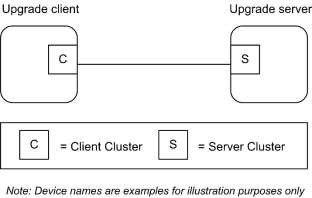
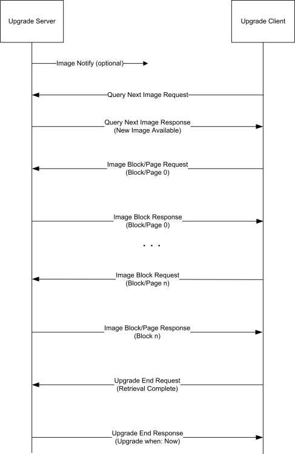

CHAPTER 11 OVER-THE-AIR UPGRADE
The Cluster Library is made of individual chapters such as this one. See Document Control in the Cluster Library for a list of all chapters and documents. References between chapters are made using a X.Y notation where X is the chapter and Y is the sub-section within that chapter. References to external documents are contained in Chapter 1 and are made using [Rn] notation.
11.1 Introduction ¶
11.1.1 Purpose ¶
The objective of this chapter is to provide detailed technical requirements for Over-The-Air image upgrade. This chapter presents a clear methodology for implementation of the OTA Upgrade cluster using the existing ZigBee stack(s), ZigBee Cluster Library and this OTA cluster.
The main goal of Over-The-Air Upgrade cluster is to provide an interoperable means for devices from different manufacturers to upgrade each other’s image. Additionally, the OTA Upgrade cluster defines a mechanism by which security credentials, logs and configuration file types are accessible by offering a solution that utilizes a set of optional and mandatory commands.
11.1.2 Scope ¶
This chapter will only describe features that require implementation in order to be ZigBee OTA upgrade (cluster) certified. Other optional features including using multicast for sending upgrade messages and (upgrade) cloning will not be discussed in this document.
Currently, only Application Bootloader support is required in order to support ZigBee OTA Upgrade cluster. MAC Bootloader upgrading is not supported at the moment.
11.1.3 Terminology ¶
Application Standard or Standard – This is a noun that refers to any application standard specification that includes this specification. Examples: ZigBee Home Automation, ZigBee Smart Energy, etc.
11.2 General Description ¶
11.2.1 Introduction ¶
The existing OTA upgrade methods available are platform specific, not OTA interoperable and do not provide a common framework for upgrading networks that support a mix of devices from multiple platforms and ZigBee Stack vendors.
The intent of this chapter is to provide an interoperable OTA upgrade of new image for devices deployed in the field. As long as the device supports the OTA Upgrade cluster and it is certified by an approved test house, its image SHALL be upgradeable by another device from the same or different manufacturer that also implemented and certified the OTA Upgrade cluster.
OTA Upgrade cluster will also require that in order to support OTA upgrade, the device will need to have an application bootloader installed as well as sufficient memory (external or internal) to store the newly loaded image. An application bootloader uses the running ZigBee stack and application to retrieve and store a new image. Depending upon the manufacturer, the image MAY consist of a bootloader image, a ZigBee stack image or only a patch to the application image. Whatever comprises the OTA upgrade image being sent to the node does not concern the ZigBee OTA cluster and it is outside the scope.
To use an application bootloader, the device is required to have sufficient memory (internal or external) to store the newly downloaded OTA upgrade image. By doing so, the current running image is not overwritten until the new image has been successfully downloaded. It also allows the possibility of a node saving an image in its memory and forwarding that image to another node. Application bootloading provides flexibility of when the device decides to download new OTA upgrade image as well as when the device decides to switch to running the new image.
Since the bootloading is done at the application level, it automatically makes use of various features already offered by the ZigBee Network Layer and Application Sub Layer (APS) including the ability to bootload a device that is multiple hops away, message retries to increase reliability, and security. It also allows the network to continue to operate normally while the bootload is in progress. In addition, it supports bootloading of sleeping (RxOnWhenIdle=FALSE) devices.
The application bootload messages are built upon typical ZigBee messages, with additional ZigBee Cluster Library (ZCL) header and payload and ZigBee OTA cluster specific payload.
An application standard that includes this specification MAY, of course, add requirements and dependencies not defined here. Such a standard SHALL not relax requirements by changing a feature here from mandatory to optional, but it MAY specify features it deems mandatory, that are optional in this specification.
For example: The ZigBee Smart Energy standard has particular OTA cluster security feature requirements that are defined as mandatory in the ZSE specification, but are optional here.
11.2.2 Cluster List ¶
The clusters defined in this document are listed in Table 11-1.
Table 11-1. Clusters Specified in This Document ¶
| Cluster ID | Cluster Name | Description |
|---|---|---|
| 0x0019 | OTA Upgrade | Parameters and commands for upgrading image on devices Over-The-Air. |
Figure 11-1. Typical Usage of OTA Upgrade Cluster ¶

Upgrade Client is a device to be upgraded with new image. Upgrade server is a device that has the new image to send to the client. This document SHALL specify how the client discovers the server, the over the air message format between the client and server, and the means for the server to signal the client to switch to running the new image.
It is possible that the upgrade server MAY have several OTA upgrade images from different manufacturers. How the upgrade server receives these OTA upgrade images and how it stores and manages them are outside the scope of this document.
In addition to the typical use case of transferring new firmware images to client devices, OTA Upgrade cluster MAY also be used to transfer device specific file types such as log, configuration or security credentials (needed for upgrading from SE 1.0 or SE 1.1 to SE 2.0). The cluster provides flexibility in OTA header and a set of optional commands that make transferring of such file types possible.
11.3 OTA Upgrade ¶
11.3.1 Overview ¶
Please see section 2.2 for a general cluster overview defining cluster architecture, revision, classification, identification, etc.
The cluster provides a standard way to upgrade devices in the network via OTA messages. Thus the upgrade process MAY be performed between two devices from different manufacturers. Devices are required to have application bootloader and additional memory space in order to successfully implement the cluster.
It is the responsibility of the server to indicate to the clients when update images are available. The client MAY be upgraded or downgraded. The upgrade server knows which client devices to upgrade and to what file version. The upgrade server MAY be notified of such information via the backend system. For ZR clients, the server MAY send a message to notify the device when an updated image is available. It is assumed that ZED clients will not be awake to receive an unsolicited notification of an available image. All clients (ZR and ZED) SHALL query (poll) the server periodically to determine whether the server has an image update for them. Image Notify is optional.
The cluster is implemented in such a way that the client service works on both ZED and ZR devices. Being able to handle polling is mandatory for all server devices while being able to send a notify is optional. Hence, all client devices must be able to use a ‘poll’ mechanism to send query message to the server in order to see if the server has any new file for it. The polling mechanism also puts fewer resources on the upgrade server. It is ideal to have the server maintain as little state as possible since this will scale when there are hundreds of clients in the network. The upgrade server is not required to keep track of what pieces of an image that a particular client has received; instead the client SHALL do that. Lastly poll makes more sense for devices that MAY need to perform special setup to get ready to receive an image, such as unlocking flash or allocating space for the new image.
11.3.1.1 Revision History ¶
The global mandatory ClusterRevision attribute SHALL reflect the revision of the implemented cluster specification as identified by one or more cluster identifiers listed below in this specification (see 2.3.5.1).
The global ClusterRevision attribute value SHALL be the highest revision number in the table below.
| Rev | Description |
|---|---|
| 1 | mandatory global ClusterRevision attribute added; CCBs 1374 1470 1477 1540 1594 2046 2056 |
| 2 | alternative Image Activation Policies; 128-bit Crypto suite, Smart Energy Profile 1.2a & 1.2b |
| 3 | CCB 2219 2220 2221 2222 2223 2224 2225 2226 2227 2228 2296 2307 2315 2342 2398 2464 |
| 4 | CCB 2477 2519 2873 |
11.3.1.2 Classification ¶
| Hierarchy | Role | PICS Code |
|---|---|---|
| Base | Utility | OTA |
11.3.1.3 Cluster Identifiers ¶
| Identifier | PICS Code | Name |
|---|---|---|
| 0x0019 | OTA | OTA Upgrade |
11.3.2 Security ¶
Security for the OTA Upgrade cluster encompasses these areas: image verification, image transport, and image encryption. Security mechanisms in the application standard dictate the security level of over-the-air image upgrading. For example, an application standard with strict security policies (such as Smart Energy) MAY support image signature as well as encryption in both network and APS layers; while other application standards MAY only support network encryption. Each application standard must decide the list of required security policies for their use of the OTA Upgrade cluster.
11.3.2.1 Terminology ¶
There are many aspects to security. These can be broken down into the following areas: confidentiality, integrity, authentication, availability, and non-repudiation. Authorization and auditing can also be considered as part of security.
Confidentiality – This is the requirement that no third party can read data that is not intended for that party. This is discussed below in Image Encryption.
Integrity – This is the property of security where the recipient can verify that data was not modified between the time it was initially distributed by the sender and when it was received by the intended recipient. Modifications to the data by third parties can be detected. This is discussed in Image Verification below.
Authentication – This is the property where the identity of the sender of data can be verified by the intended recipient. This is discussed in Image Verification below.
Availability – This refers to the property that resources are available when they are required and cannot be unfairly consumed by an attacker. The OTA Upgrade cluster does not address this; as such it will not be discussed any further.
Non-repudiation – This refers to the property where a sender/receiver cannot deny that a security exchange took place. The OTA Upgrade cluster does not address this; as such it will not be discussed any further.
11.3.3 Image Verification ¶
11.3.3.1 Asymmetric Verification of Authenticity and Integrity ¶
It is strongly encouraged that there is a means to verify the authenticity and integrity of the bootload image. This is most often accomplished through asymmetric encryption technologies (i.e. public/private keys) where only one device is able to create a digital signature but many devices are able to verify it. Bootload images MAY be signed by the private key of the manufacturer with that signature appended to the image that is transported to the device. Once the complete image has been received the signature is verified using the public key of the signer.
Devices MAY be pre-installed with the certificate (public key) of the device that created the signature, or they MAY receive the certificate over-the-air. How the signer's security data is obtained is considered outside the scope of the OTA Upgrade cluster and is manufacturer specific. When signer certificates are sent overthe-air and not pre-installed, it is recommended that the transportation of the certificate be done using encryption from a trusted source to reduce the chance an attacker MAY inject their own signer certificate into the device.
Images with verification mechanisms built in MAY be transported over insecure communication mechanisms while still maintaining their authenticity and integrity. In fact, it is likely that the originator of the upgrade image (the manufacturer) will not be directly connected to any ZigBee networks and therefore distribute the upgrade image across other mediums (such as the internet) before arriving on the ZigBee network. In that case it is crucial that the Image Verification be independent of the communication medium. Any attempts to tamper with the signature or the data itself must be detected and will cause the upgrade image to be rejected by the target device. An attacker that crafts its own signed image and tries to have it accepted will be rejected since that image will not be signed by the manufacturer’s signing authority.
It is up to each application standard to determine the minimum requirements for image verification. For example: for the ZigBee Smart Energy standard there is already a minimum set of security requirements included in NEMA SG-AMI 1-2009. The OTA Upgrade cluster will communicate the methods in use for basic image verification. Individual manufacturers are free to augment this and provide their own extensions. Those extensions are outside the scope of the OTA Upgrade cluster.
Without asymmetric encryption technology, a device is limited in its ability to authenticate images. Images MAY be encrypted with symmetric keys such that only those devices that need to decrypt the image have access to the key. However, the security of this system is dependent on the security of all devices that have access to the symmetric key.
11.3.3.2 Verification of Integrity by Hash Value ¶
For application standards that do not require the asymmetric verification method, the authenticity of the OTA image cannot be verified. However, it is possible to verify the integrity of the OTA image by using the hash value method in section 11.7.2. There will be no signer certificate nor any signature involved.
11.3.4 Image Transport ¶
When there is a means to verify the authenticity of the bootload images, transport of the images in a secure fashion provides little additional security to the integrity and authenticity. What secure transportation provides is a means to communicate the policies about when a device SHOULD perform upgrade or what version it SHOULD upgrade to.
A secured ZigBee network uses network security for all messages, but that does not provide point-to-point security. APS security SHOULD be used to assure that messages are sent from only the trusted source (the upgrade server). This will be utilized to provide implicit and explicit authorization by the upgrade server about when devices will initiate bootload events.
Distribution of upgrade image via broadcast or multicast messages is not recommended because its lack of point-to-point security. Reception of upgrade images via broadcast or multicast SHOULD not be inferred as authorization by the upgrade server to initiate the upgrade. In this case, the act of receiving the image and upgrading it SHOULD be split up into separate events. The latter communications SHOULD be done via unicast to verify that the upgrade server has authorized a device to upgrade to a previously received image. Applications must determine what level of authorization is required by the upgrade server.
11.3.5 Image Signature ¶
An application standard MAY require that the OTA Upgrade cluster provides mechanisms to sign the OTA file to protect the authenticity and integrity of the image.
11.3.6 Image Integrity Code ¶
An application standard MAY require that the OTA Upgrade cluster provides hash mechanisms to provide protection against unintended data corruption.
11.4 OTA File Format ¶
11.4.1 General Structure ¶
The OTA file format is composed of a header followed by a number of sub-elements. The header describes general information about the file such as version, the manufacturer that created it, and the device it is intended for. Sub-elements in the file MAY contain upgrade data for the embedded device, certificates, configuration data, log messages, or other manufacturer specific pieces. Below is an example file.
Figure 11-2. Sample OTA File ¶
| Octets | Variable | Variable | Variable | Variable |
|---|---|---|---|---|
| Data | OTA Header | Upgrade Image | Signer Certificate | Signature |
The OTA header will not describe details of the particular sub-elements. Each sub-element is self-describing. With exception of a few sub-elements, the interpretation of the data contained is up to the manufacturer of the device.
11.4.2 OTA Header Format ¶
Table 11-2. OTA Header Fields ¶
| Octets | Data Types | Field Names | M/O |
|---|---|---|---|
| 4 | uint32 | OTA upgrade file identifier | M |
| 2 | uint16 | OTA Header version | M |
| 2 | uint16 | OTA Header length | M |
| 2 | map16 | OTA Header Field control | M |
| 2 | uint16 | Manufacturer code | M |
| 2 | uint16 | Image type | M |
| 4 | uint32 | File version | M |
| 2 | uint16 | ZigBee Stack version | M |
| 32 | ASCII221 | OTA Header string | M |
| 4 | uint32 | Total Image size (including header) | M |
| 0/1 | uint8 | Security credential version | O |
| 0/8 | EUI64 | Upgrade file destination | O |
| 0/2 | uint16 | Minimum hardware version | O |
| 0/2 | uint16 | Maximum hardware version | O |
The first entry of the table above (OTA upgrade file identifier) represents the first field in the OTA header, and the last entry represents the last field. The endianness used in each data field SHALL be little endian in order to be compliant with general ZigBee messages.
Please refer to Chapter 2, Foundation Specification, for more description on data types.
11.4.2.1 OTA Upgrade File Identifier ¶
The value is a unique 4-byte value that is included at the beginning of all ZigBee OTA upgrade image files in order to quickly identify and distinguish the file as being a ZigBee OTA cluster upgrade file, without having to examine the whole file content. This helps distinguishing the file from other file types on disk. The value is defined to be “0x0BEEF11E”.
11.4.2.2 OTA Header Version ¶
The value enumerates the version of the header and provides compatibility information. The value is composed of a major and minor version number (one byte each). The high byte (or the most significant byte) represents the major version and the low byte (or the least significant byte) represents the minor version number. A change to the minor version means the OTA upgrade file format is still backward compatible, while a change to the major version suggests incompatibility.
The current OTA header version SHALL be 0x0100 with major version of “01” and minor version of “00”.
221 this does not have a length byte, so it is not a character string data type
11.4.2.3 OTA Header Length ¶
This value indicates full length of the OTA header in bytes, including the OTA upgrade file identifier, OTA header length itself to any optional fields. The value insulates existing software against new fields that MAY be added to the header. If new header fields added are not compatible with current running software, the implementations SHOULD process all fields they understand and then skip over any remaining bytes in the header to process the image or signing certificate. The value of the header length depends on the value of the OTA header field control, which dictates which optional OTA header fields are included.
11.4.2.4 OTA Header Field Control ¶
The bit mask indicates whether additional information such as Image Signature or Signing Certificate are included as part of the OTA Upgrade Image.
Table 11-3. OTA Header Field Control Bitmask ¶
| Bits | Name |
|---|---|
| 0 | Security Credential Version Present |
| 1 | Device Specific File |
| 2 | Hardware Versions Present |
Security credential version present bit indicates whether security credential version field is present or not in the OTA header.
Device specific file bit in the field control indicates that this particular OTA upgrade file is specific to a single device.
Hardware version present bit indicates whether minimum and maximum hardware version fields are present in the OTA header or not.
11.4.2.5 Manufacturer Code ¶
This is the ZigBee assigned identifier for each member company. When used during the OTA upgrade process, manufacturer code value of 0xffff has a special meaning of a wild card. The value has a ‘match all’ effect. OTA server MAY send a command with wild card value for manufacturer code to match all client devices from all manufacturers.
11.4.2.6 Image Type ¶
The manufacturer SHOULD assign an appropriate and unique image type value to each of its devices in order to distinguish the products. This is a manufacturer specific value. However, the OTA Upgrade cluster has reserved the last 64 values of image type value to indicate specific file types such as security credential, log, and configuration. When a client wants to request one of these specific file types, it SHALL use one of the reserved image type values instead of its own (manufacturer specific) value when requesting the image via Query Next Image Request command.
Table 11-4. Image Type Values ¶
| File Type Values | File Type Description |
|---|---|
| 0x0000 – 0xffbf | Manufacturer Specific |
| 0xffc0 | Client Security credentials |
| File Type Values | File Type Description |
|---|---|
| 0xffc1 | Client Configuration |
| 0xffc2 | Server Log |
| 0xffc3 | Picture |
| 0xffff | wild card |
Image type value of 0xffff has a special meaning of a wild card. The value has a ‘match all’ effect. For example, the OTA server MAY send Image Notify command with image type value of 0xffff to indicate to a group of client devices that it has all types of images for the clients. Additionally, the OTA server MAY send Upgrade End Response command with image type value of 0xffff to indicate a group of clients, with disregard to their image types, to upgrade.
11.4.2.7 File Version ¶
For firmware image, the file version represents the release and build number of the image’s application and stack. The application release and build numbers are manufacturer specific, however, each manufacturer SHOULD obtain stack release and build numbers from their stack vendor. OTA Upgrade cluster makes the recommendation below regarding how the file version SHOULD be defined, in an attempt to make it easy for humans and upgrade servers to determine which versions are newer than others. The upgrade server SHOULD use this version value to compare with the one received from the client.
The server MAY implement more sophisticated policies to determine whether to upgrade the client based on the file version. A higher file version number indicates a newer file.
Table 11-5. Recommended File Version Definition ¶
| Application Release | Application Build | Stack Release | Stack Build |
|---|---|---|---|
| 1 byte | 1 byte | 1 byte | 1 byte |
| 8-bit integer | 8-bit integer | 8-bit integer | 8-bit integer |
For example,
File version A: 0x10053519 represents application release 1.0 build 05 with stack release 3.5 b19.
File version B: 0x10103519 represents application release 1.0 build 10 with stack release 3.5 b19.
File version C: 0x10103701 represents application release 1.0 build 10 with stack release 3.7 b01.
File version B is newer than File version A because its application version is higher, while File version C is newer than File version B because its stack version is higher.
The file version value MAY be defined differently for different image types. For example, version scheme for security credential data MAY be different than that of log or configuration file or a normal firmware upgrade image version. The specific implementation of a versioning scheme is manufacturer specific.
Note that a binary-coded decimal convention (BCD) concept is used here for version number. This is to allow easy conversion to decimal digits for printing or display, and allows faster decimal calculations.
11.4.2.8 ZigBee Stack Version ¶
This information indicates the ZigBee stack version that is used by the application. This provides the upgrade server an ability to coordinate the distribution of images to devices when the upgrades will cause a major jump that usually breaks the over-the-air compatibility, for example, from ZigBee Pro to upcoming ZigBee IP. The values below represent currently available ZigBee stack versions.
Table 11-6. ZigBee Stack Version Values ¶
| ZigBee Stack Version Values | Stack Name |
|---|---|
| 0x0000 | ZigBee 2006 |
| 0x0001 | ZigBee 2007 |
| 0x0002 | ZigBee Pro |
| 0x0003 | ZigBee IP |
11.4.2.9 OTA Header String ¶
This is a manufacturer specific string that MAY be used to store other necessary information as seen fit by each manufacturer. The string SHALL be a null terminated string using ASCII encoding. Any bytes after the terminating character MAY be used by manufacturers for additional data transport and SHALL not be interpreted as human readable data. The idea is to have a human readable string that can prove helpful during development cycle. The string is defined to occupy 32 bytes of space in the OTA header.
11.4.2.10 Total Image Size ¶
The value represents the total image size in bytes. This is the total of data in bytes that SHALL be transferred over-the-air from the server to the client. In most cases, the total image size of an OTA upgrade image file is the sum of the OTA header and the actual file data (along with its tag) lengths. If the image is a signed image and contains a certificate of the signer, then the Total image size SHALL also include the signer certificate and the signature (along with their tags) in bytes.
This value is crucial in the OTA upgrade process. It allows the client to determine how many image request commands to send to the server to complete the upgrade process.
11.4.2.11 Security Credential Version ¶
This information indicates security credential version type, such as SE1.0 or SE2.0 that the client is required to have, before it SHALL install the image. One use case for this is so that after the client has downloaded a new image from the server, it SHOULD check if the value of security credential version allows for running the image. If the client’s existing security credential version does not match or is outdated from what specified in the OTA header, it SHOULD obtain new security credentials before upgrading to running the new image.
Table 11-7. Security Credential Version ¶
| Security Credential Version Values | Security Credential Version Types |
|---|---|
| 0x00 | SE 1.0 |
| 0x01 | SE 1.1 |
| Security Credential Version Values | Security Credential Version Types |
|---|---|
| 0x02 | SE 2.0 |
| 0x03 | SE 1.2 |
11.4.2.12 Upgrade File Destination ¶
If Device Specific File bit is set, it indicates that this OTA file contains security credential/certificate data or other type of information that is specific to a particular device. Hence, the upgrade file destination field (in OTA header) SHOULD also be set to indicate the IEEE address of the client device that this file is meant for.
11.4.2.13 Minimum Hardware Version ¶
The value represents the earliest hardware platform version this image SHOULD be used on. This field is defined as follows:
Table 11-8. Hardware Version Format ¶
| Version | Revision |
|---|---|
| 1 byte | 1 byte |
| 8-bit integer | 8-bit integer |
The high byte represents the version and the low byte represents the revision.
11.4.2.14 Maximum Hardware Version ¶
The value represents the latest hardware platform this image SHOULD be used on. The field is defined the same as the Minimum Hardware Version (above).
The hardware version of the device SHOULD not be earlier than the minimum (hardware) version and SHOULD not be later than the maximum (hardware) version in order to run the OTA upgrade file.
11.4.3 Sub-element Format ¶
Sub-elements in the file are composed of an identifier followed by a length field, followed by the data. The identifier provides for forward and backward compatibility as new sub-elements are introduced. Existing devices that do not understand newer sub-elements MAY ignore the data.
Figure 11-3. Sub-element Format ¶
| Octets | 2-bytes | 4-bytes | Variable |
|---|---|---|---|
| Data | Tag ID | Length Field | Data |
Sub-elements provide a mechanism to denote separate sections of data utilized by the device for the upgrade. For example, a device that has multiple processors each with their own firmware image could use a separate sub-element for each one. The details of how this is handled would be up to the manufacturer of the device.
A few sub-elements are not manufacturer-specific and defined by the OTA cluster itself. See section 11.4.4 below.
11.4.3.1 Tag ID ¶
The tag identifier denotes the type and format of the data contained within the sub-element. The identifier is one of the values from Table 11-9 below.
11.4.3.2 Length Field ¶
This value dictates the length of the rest of the data within the sub-element in bytes. It does not include the size of the Tag ID or the Length Fields.
11.4.3.3 Data ¶
The length of the data in the sub-element must be equal to the value of the Length Field in bytes. The type and format of the data contained in the sub-element is specific to the Tag.
11.4.4 Tag Identifiers ¶
Sub-elements are generally specific to the manufacturer and the implementation. However, this specification has defined a number of common identifiers that MAY be used across multiple manufacturers.
Table 11-9. Tag Identifiers ¶
| Tag Identifiers | Description |
|---|---|
| 0x0000 | Upgrade Image |
| 0x0001 | ECDSA Signature (Crypto Suite 1) |
| 0x0002 | ECDSA Signing Certificate (Crypto Suite 1) |
| 0x0003 | Image Integrity Code |
| 0x0004 | Picture Data |
| 0x0005 | ECDSA Signature (Crypto Suite 2) |
| 0x0006 | ECDSA Signing Certificate (Crypto Suite 2) |
| 0xf000 – 0xffff | Manufacturer Specific Use |
Manufacturers MAY define tag identifiers for their own use and dictate the format and behavior of devices that receive images with that data.
11.4.5 Crypto Suites ¶
The specification allows use of one of two crypto suites. Crypto Suite 1 corresponds to the version offering ‘80-bit’ symmetric equivalent security, Crypto Suite 2 allows ‘128-bit’ symmetric equivalent security. Each utilizes different key lengths and signature sizes and thus requires unique tags with different sizes.
11.4.6 ECDSA Signature Sub-element (Crypto Suite 1) ¶
The ECDSA Signature sub-element contains a signature for the entire file as means of insuring that the data was not modified at any point during its transmission from the signing device.
If an image contains an ECDSA Signature Sub-element it SHALL be the last sub-element in the file.
Figure 11-4. ECDSA Signature ¶
| Octets | 2-bytes | 4-bytes | 8-bytes | 42-bytes |
|---|---|---|---|---|
| Data | Tag ID: 0x0001 | Length Field: 0x00000032 | Signer IEEE Address | Signature Data |
11.4.6.1 Signer IEEE Address ¶
This field SHALL contain the IEEE address of the device that created the signature, in little endian format.
11.4.6.2 Signature Data ¶
This field SHALL contain the ECDSA signature data, and is generated as described in the section 11.7.
11.4.7 ECDSA Signing Certificate Sub-element ¶
This sub-element is used to include information about the authority that generated the signature for the OTA file.
Figure 11-5. ECDSA Signing Certificate Sub-element ¶
| Octets | 2-bytes | 4-bytes | 48-bytes |
|---|---|---|---|
| Data | Tag ID: 0x0002 | Length Field: 0x00000030 | ECDSA Certificate |
11.4.7.1 ECDSA Certificate (Crypto Suite 1) ¶
This SHALL contain the data for the ECDSA certificate of the device. The certificate SHALL be formatted as described in [Z9] in section C.4.2.2.4.
11.4.8 Image Integrity Code Sub-element ¶
This sub-element includes a hash value used to verify the integrity of the OTA file.
Figure 11-6. Hash Value Sub-element ¶
| Octets | 2-bytes | 4-bytes | 16-bytes |
|---|---|---|---|
| Data | Tag ID: 0x0003 | Length Field: 0x00000010 | Hash Value |
11.4.8.1 Hash Value ¶
This hash value used to verify the integrity of the OTA file and the detail to generate the hash is listed in section 11.7.2.
11.4.9 ECDSA Signature Sub-element (Crypto Suite 2) ¶
The ECDSA Signature sub-element contains a signature for the entire file as means of insuring that the data was not modified at any point during its transmission from the signing device.
If an image contains an ECDSA Signature Sub-element it SHALL be the last sub-element in the file.
Figure 11-7. ECDSA Signature ¶
| Octets | 2-bytes | 4-bytes | 8-bytes | 72-bytes |
|---|---|---|---|---|
| Data | Tag ID: 0x0005 | Length Field: 0x00000050 | Signer IEEE Address | Signature Data |
11.4.9.1 Signer IEEE Address ¶
This field SHALL contain the IEEE address of the device that created the signature, in little endian format.
11.4.9.2 Signature Data ¶
This field SHALL contain the ECDSA signature data, and is generated as described in the section 11.7.
11.4.10 ECDSA Signing Certificate Sub-element ¶
(Crypto Suite 2)
This sub-element is used to include information about the authority that generated the signature for the OTA file.
Figure 11-8. ECDSA Signing Certificate Sub-element ¶
| Octets | 2-bytes | 4-bytes | 74-bytes |
|---|---|---|---|
| Data | Tag ID: 0x0006 | Length Field: 0x0000004A | ECDSA Certificate |
11.4.10.1 ECDSA Certificate (Crypto Suite 2) ¶
This SHALL contain the data for the ECDSA certificate of the device. The certificate SHALL be formatted as described in [Z9] in section C.4.2.3.3.
11.5 OTA File Naming ¶
OTA Upgrade cluster provides recommendation below regarding OTA Upgrade image file naming convention and extension. This is an effort to assist the upgrade server in sorting different image files received from different manufacturers.
The OTA Upgrade image file name SHOULD contain the following information at the beginning of the name with each field separated by a dash (“-“): manufacturer code, image type and file version. The value of each field stated SHOULD be in hexadecimal number and in capital letter. Each manufacturer MAY append more information to the name as seen fit to make the name more specific. The OTA Upgrade file extension SHOULD be “.zigbee”.
An example of OTA Upgrade image file name and extension is “1001-00AB-10053519-upgradeMe.zigbee”.
11.6 Signatures ¶
It is up to the application standard to determine whether or not a signature is necessary for over the air upgrade files. If a standard has mandated the use of signatures then a device adhering to that standard SHALL only accept images that have a signature sub-element. If such a device receives an OTA file that does not contain a signature sub-element, then the device will discard the image and proceed with any further processing required by the specific application standard. The device must verify the signature as described in the following sections prior to acting on any data inside the file.
If a standard does not require the use of signatures then devices MAY still choose to use images with signatures. However, it is highly recommended that such a device only accept images either with signatures or without, but not accept both. A device greatly reduces its security if it will accept signed or unsigned upgrade files.
11.7 ECDSA Signature Calculation ¶
It is EXPECTED that in most all cases the signer device is not a real ZigBee device and is not part of any ZigBee network. Therefore, the signer’s IEEE is not a real ZigBee device address, but the address of a virtual device that exists only to sign upgrade images for a manufacturer and or a set of products. Its address SHOULD be separate from the block of device addresses produced by a manufacturer as certified ZigBee devices.
The signature calculation SHALL be performed as follows:
- A valid OTA image SHALL have previously been created including all the necessary header fields, tags, and their data, in the image.
- The signer shall select a crypto suite to use based on its own security policies.
- An ECDSA signer certificate tag sub-element SHALL be constructed, based on the selected crypto suite, and SHALL contain the certificate of the signing device, appended to the image.
- An ECDSA signature tag sub-element SHALL be constructed, based on the previously selected crypto suite, including only the tag ID, the length of the tag, and the signer’s IEEE address (see 11.4.6 and 11.4.9). No actual signature data SHALL be included yet. The tag SHALL be appended to the image.
- The OTA image header SHALL be updated with a new total image size, including the signature certificate tag sub-element that was added, and the full size of the ECDSA signature tag sub-element (see 11.4.6 and 11.4.9).
- A message digest SHALL be calculated over the entire image. a. The message digest SHALL be computed by using the Matyas-Meyer-Oseas cryptographic hash specified in the ZigBee core specification 05-3474-20 Section B.6. This uses the extended AES-MMO hash proposed as a change to an earlier version of the ZigBee core specification 05-3474-20 Section B.6.
2. The ECDSA algorithm SHALL be used to calculate the signature using the message digest and the
signer device’s private key.
3. The r and s components of the signature SHALL both be appended to the image. The r component
SHALL be appended first, and then the s component.
11.7.1 ECDSA Signature Verification ¶
The signature of a completely downloaded OTA file SHALL be verified as follows.
18. The ZigBee device SHALL first determine if the signer of the image is an authorized signer.
2. It does this by extracting the signer IEEE from ECDSA signature tag sub-element.
1. If an ECDSA signature tag sub-element is not found in the image, then the image SHALL be
discarded as invalid and no further processing SHALL be done.
3. The device SHALL compare the extracted signer IEEE with the list of local, known, authorized
signers and determine if there is a match.
4. If no match is found, then the image SHALL be discarded as invalid and no further processing
SHALL be done.
19. The device SHALL then check the ECDSA Crypto Suite of the image.
a.
The device SHALL check which crypto suite is used for both the ECDSA Signature tag and EC- DSA Signing Certificate tag. If both elements do not use the same crypto suite, then the device SHALL discard the image as invalid and no further processing SHALL be done.
b. The device SHALL check which crypto suites are locally allowed and supported. If the device
does not locally support the crypto suite used by the ECDSA Signing certificate tag or a security policy does not allow its use for verifying locally, then it SHALL discard the image as invalid and no further processing SHALL be done.
20. The device SHALL then obtain the certificate associated with the signer IEEE.
5. The device SHALL extract the signer certificate data from the ECDSA signing certificate sub-ele-
ment.
1. If there is no ECDSA signing certificate tag sub-element, then it SHALL discard the image as
invalid and no further processing SHALL be done.
6. The device SHALL verify that the signer IEEE address within the ECDSA signature tag sub-ele-
ment matches the subject field of the ECDSA signing certificate sub-element.
2. Note: The subject field IEEE is in big-endian format and the signer IEEE is in little endian
format.
7. If the addresses do not match, then the image SHALL be discarded as invalid and no further pro-
cessing SHALL be done.
21. The device SHALL then obtain the CA public key associated with the signer.
8. The device SHALL obtain the IEEE of the CA public key from the issuer field within the ECDSA
certificate data of the ECDSA signing certificate sub-element.
9. If the IEEE of the CA does not match its list of known CAs, or the public key for that CA could
not be locally obtained, then the image SHALL be discarded as invalid and no further processing SHALL be done.
22. The device SHALL then calculate the message digest of the image.
10. The digest SHALL be calculated using the Matyas-Meyer-Oseas cryptographic hash function over
the entire image except for the signature data of the ECDSA signature sub-element.
3. Note: The calculation SHALL include the signature tag ID of the ECDSA signature sub-ele-
ment, the length field of the ECDSA signature sub-element, and the signer IEEE field of the ECDSA signature sub-element.
23. The signer’s public key SHALL be obtained by extracting it from the signer certificate.
24. The device SHALL then pass the calculated digest value, signer certificate, and CA public key to the
ECDSA verification algorithm.
25. If the ECDSA algorithm returns success, then the image SHALL be considered valid.
26. If the ECDSA algorithm returns any other result, then the image SHALL be discarded as invalid and
no further processing SHALL be done.
11.7.2 Image Integrity Code ¶
It is up to the application standard to determine whether or not an image integrity code is necessary for over the air upgrade files. Standards that require the use of digital signatures SHALL NOT use this Image Integrity Hash Code sub-element in conjunction to the ECDSA signature. If a standard has mandated the use of hash values then a device adhering to that standard SHALL only accept images that have a valid hash sub-element. If such a device receives an OTA file that does not contain a hash sub-element, then the device will discard the image and proceed with any further processing required by the specific application standard. The device must verify the hash as described in the following sections prior to acting on any data inside the file.
The hash value provides protection against unintended data corruption. An OTA image which is hosted at a back-end image repository might be stored and forwarded at several intermediate locations before it reaches the OTA server, where it is typically stored on a local file system. There is a potential for this file being corrupted either during transfer or as a result of file system errors. The hash value provides an interoperable way for OTA servers to detect corrupt images before advertising such files to OTA clients. Otherwise corrupt images might only be detected by OTA clients after complete download over-the-air. Since this condition cannot be detected by the OTA server, it would offer the same (corrupt) file over and over again.
If the application standard does not mandate the use of this hash value, it is strongly recommended that image integrity is ascertained using another approach, for example a hash value (SHA-256 or comparable) that is maintained out-of-band and provided by the device vendor together with the OTA image.
11.7.2.1 Hash Value Calculation ¶
The hash value calculation SHALL be performed as follows:
27. A valid OTA image SHALL have previously been created including all the necessary header fields,
tags, and their data, in the image.
28. An AES-MMO hash value tag sub-element header SHALL be constructed including only the tag ID
and the length of the sub-element data (16 bytes). No actual data SHALL be included yet. The tag header SHALL be appended to the image.
29. The OTA image header SHALL be updated with a new total image size, including the hash tag sub-
element header that was added, and the full size of the hash tag sub-element (6 + 16 = 22 bytes).
30. The hash value SHALL be calculated using the Matyas-Meyer-Oseas cryptographic hash specified in
section B.6 of [R5]. The hash is calculated starting with the OTA image header and spanning just before the hash sub-element header, i.e. the calculation takes in to account the first byte of the image header up to the last byte of the sub-element preceding the hash sub-element.
31. The computed hash value SHALL be appended to the image.
11.7.2.2 Hash Value Verification ¶
The hash value of a complete OTA file SHALL be verified as follows.
32. The device SHALL calculate the hash value of the image using the Matyas-Meyer-Oseas crypto-
graphic hash function. The hash is calculated starting with the OTA image header and spanning just
before the hash sub-element header, i.e. the calculation takes in to account the first byte of the image header up to the last byte of the sub-element preceding the hash sub-element.
33. The device SHALL then compare the calculated hash value with the data stored in the hash tag sub-
element data. If both octet strings are equal, the image SHALL be considered intact, otherwise the image SHALL be considered corrupt.
34. If the image is regarded corrupt, it SHALL be discarded as invalid and no further processing SHALL
be done.
11.8 Discovery of the Upgrade Server ¶
Before becoming part of the network, a device MAY be preprogrammed with the IEEE address of the authorized upgrade server. In this case, once the device is part of the network, it SHALL discover the network address of the upgrade server via ZDO network address discovery command.
If the device is not preprogrammed with the upgrade server’s IEEE address, the device SHALL discover the upgrade server before it participates in any upgrade process. The device SHALL send Match Descriptor Request (ZDO command) to discover an upgrade server by specifying a single OTA cluster ID in the input Cluster attribute. If the receiving node is an upgrade server, it SHALL reply with Match Descriptor Response, with the (active) endpoint that the OTA cluster is implemented on, hence, identifying itself as acting as server in OTA Upgrade cluster. Since Match descriptor request MAY be sent as unicast or broadcast, the client MAY get multiple responses if there are more than one server in the network. The client SHALL use the first response received. Each application standard SHOULD specify the frequency of OTA server discovery done by the client. After discovering the OTA server’s short ID via the ZDO Match descriptor request the client SHALL discover the IEEE address of the upgrade server via ZDO IEEE address discovery command and store the value in UpgradeServerID attribute.
A node SHALL have an application link key with the Upgrade server; it SHALL request one prior to any OTA operations.
If the upgrade server is the trust center, it SHOULD use its trust center link key.
In the case of the ZigBee Smart Energy standard, where the upgrade server is not the trust center, the device SHALL perform partner link key request.
11.8.1 Server and Client ¶
The server must be able to store one or more OTA upgrade image(s). The server MAY notify devices in the network when it receives new OTA upgrade image by sending an Image Notify Command. The Image Notify Command will be received reliably only on ZR devices since ZED devices MAY have their radio off at the time. The Image Notify Command MAY be sent as unicast or broadcast. If sent as broadcast, the message also has a jitter mechanism built in to avoid the server being overwhelmed by the requests from the clients. If sent as unicast, the client SHALL ignore the jitter value.
The client device will send Query Next Image Request Command if the information in the Image Notify Command is of interest and after applying the jitter value. All devices SHALL send in a Query Next Image Request Command periodically regardless of whether an Image Notify was sent by the OTA server.
When the device has received a response to its query indicating a new OTA upgrade image is available, the client device SHALL request blocks of the OTA upgrade image. The process continues until the client receives all image data. At that point, the client SHALL verify the integrity of the whole image received and send Upgrade End Request Command along with the upgrade status. The server SHALL notify the client of when to upgrade to new image in the Upgrade End Response.
It is the responsibility of the server to ensure that all clients in the network are upgraded. The server MAY be told which client to upgrade or it MAY keep a database of all clients in the network and track which client has not yet been upgraded.
11.8.2 Sleepy Devices ¶
The upgrade server has no reliable way to immediately notify the sleepy devices of the availability of new OTA Upgrade image, hence, the devices SHALL query the server periodically to learn if there are new images available. The query for new upgrade image MAY be done as a separate event or it MAY be done in addition to normal scheduled communication between the device and the server. The frequency as to how often the sleepy devices query the server SHALL be specified by each application standard. Moreover, it is important to realize that the frequency that the sleepy device checks for new image (sending Query Next Image command) determines how often the particular node could be upgraded. This rate will also drive how fast code updates MAY be pushed out to each network. For the SE 1.x to SE 2.0 transition, if sleepy devices only check in once a month for the new image then it will likely to take over a month to complete the transition. If the application standard fails to set any requirement on the sleepy device checking for new images, then it is unlikely that the OTA upgrade feature will work reliably for those devices.
It is a recommendation that sleepy devices SHALL make their best effort to poll more rapidly during the OTA Upgrade Image download process in order to ensure that the download completes in a timely manner. However, it is acknowledged that some sleepy devices MAY not be able to do so due to limitation on their batteries or due to other reasons such as battery-less/Green Power devices. Hence, such devices MAY take much longer to complete the download process.
11.9 Dependencies ¶
Each device that wishes to implement the OTA Upgrade cluster SHALL have the following:
- ZigBee Device Object (ZDO) match descriptor request and response commands. The command is used to discover upgrade server.
- ZigBee Cluster Library (ZCL) global commands and basic cluster attributes.
- Application Bootloader: To actually upgrade existing image with newly installed one on the additional memory space. The implementation of the Bootloader along with its specification, for example, where it lives and its size are outside the scope of this document.
- Additional Memory Space SHALL be large enough to hold the whole OTA Upgrade Image: It is important to be able to store the new image until the device receives a signal from the server to switch to running the image. This is because it MAY be necessary for all devices in the network to switch their images at once if the new image is not OTA compatible with the old one.
- In addition, if the client device is composed of multiple processors; each requires separate image, then the additional memory space SHALL be large enough to hold all the images for all the processors that make up the device. In case of server devices, its additional memory space will depend on how many images the devices are planning to hold.
- The specification of the additional memory space and its connection to the processor is outside the scope of this document.
11.10 ¶
OTA Cluster Attributes
Below are attributes defined for OTA Upgrade cluster. Currently, all attributes are client side attributes (only stored on the client). There is no server side attribute at the moment. All attributes with the exception of UpgradeServerID SHOULD be initialized to their default values before being used.
Table 11-10. Attributes of OTA Upgrade Cluster ¶
| Id | Name | Type | Range | Acc | Default | M/O |
|---|---|---|---|---|---|---|
| 0x0000 | UpgradeServerID | EUI64 | - | R | 0xffffffffffffffff | M |
| 0x0001 | FileOffset | uint32 | all | R | 0xffffffff | O |
| 0x0002 | CurrentFileVersion | uint32 | all | R | 0xffffffff | O |
| 0x0003 | CurrentZigBeeStackVersion | uint16 | all | R | 0xffff | O |
| 0x0004 | DownloadedFileVersion | uint32 | all | R | 0xffffffff | O |
| 0x0005 | DownloadedZigBeeStackVersion | uint16 | all | R | 0xffff | O |
| 0x0006 | ImageUpgradeStatus | enum8 | all | R | 0x00 | M |
| 0x0007 | Manufacturer ID | uint16 | all | R | - | O |
| 0x0008 | Image Type ID | uint16 | all | R | - | O |
| 0x0009 | MinimumBlockPeriod | uint16 | 0x0000-0xfffe | R | 0 | O |
| 0x000a | Image Stamp | uint32 | all | R | O | |
| 0x000b | UpgradeActivationPolicy | enum8 | 0x00-0x01 | R | 0x00 | O |
| 0x000c | UpgradeTimeout Policy | enum8 | 0x00-0x01 | R | 0x00 | O |
11.10.1 UpgradeServerID Attribute ¶
The attribute is used to store the IEEE address of the upgrade server resulted from the discovery of the upgrade server’s identity. If the value is set to a non-zero value and corresponds to an IEEE address of a device that is no longer accessible, a device MAY choose to discover a new Upgrade Server depending on its own security policies.
The attribute is mandatory because it serves as a placeholder in a case where the client is programmed, during manufacturing time, its upgrade server ID. In addition, the attribute is used to identify the current upgrade server the client is using in a case where there are multiple upgrade servers in the network. The attribute is also helpful in a case when a client has temporarily lost connection to the network (for example, via a reset or a rejoin), it SHALL try to rediscover the upgrade server via network address discovery using the IEEE address stored in the attribute.
By default, the value is 0xffffffffffffffff, which is an invalid IEEE address. The attribute is a client-side attribute and stored on the client. Please refer to section 11.8 for a description of OTA server discovery.
11.10.2 FileOffset Attribute ¶
The parameter indicates the current location in the OTA upgrade image. It is essentially the (start of the) address of the image data that is being transferred from the OTA server to the client. The attribute is optional on the client and is made available in a case where the server wants to track the upgrade process of a particular client.
11.10.3 CurrentFileVersion Attribute ¶
The file version of the running firmware image on the device. The information is available for the server to query via ZCL read attribute command. The attribute is optional on the client.
11.10.4 CurrentZigBeeStackVersion Attribute ¶
The ZigBee stack version of the running image on the device. The information is available for the server to query via ZCL read attribute command. The attribute is optional on the client. See 11.4.2.8 for values.
11.10.5 DownloadedFileVersion Attribute ¶
The file version of the downloaded image on additional memory space on the device. The information is available for the server to query via ZCL read attribute command. The information is useful for the OTA upgrade management, so the server MAY ensure that each client has downloaded the correct file version before initiate the upgrade. The attribute is optional on the client.
11.10.6 DownloadedZigBeeStackVersion Attribute ¶
The ZigBee stack version of the downloaded image on additional memory space on the device. The information is available for the server to query via ZCL read attribute command. The information is useful for the OTA upgrade management, so the server SHALL ensure that each client has downloaded the correct ZigBee stack version before initiate the upgrade. The attribute is optional on the client.
11.10.7 ImageUpgradeStatus Attribute ¶
The upgrade status of the client device. The status indicates where the client device is at in terms of the download and upgrade process. The status helps to indicate whether the client has completed the download process and whether it is ready to upgrade to the new image. The status MAY be queried by the server via ZCL read attribute command. Hence, the server MAY not be able to reliably query the status of ZED client since the device MAY have its radio off.
Table 11-11. Image Upgrade Status Attribute Values ¶
| Image Upgrade Status Values | Description |
|---|---|
| 0x00 | Normal |
| 0x01 | Download in progress |
| 0x02 | Download complete |
| 0x03 | Waiting to upgrade |
| 0x04 | Count down |
| 0x05 | Wait for more |
| 0x06 | Waiting to Upgrade via External Event |
Normal status typically means the device has not participated in any download process. Additionally, the client SHALL set its upgrade status back to Normal if the previous upgrade process was not successful.
Download in progress status is used from when the client device receives SUCCESS status in the Query Next Image Response command from the server prior to when the device receives all the image data it needs.
Download complete status indicates the client has received all data blocks required and it has already verified the OTA Upgrade Image signature (if applied) and has already written the image onto its additional memory space. The status will be modified as soon as the client receives Upgrade End Response command from the server.
Wait to upgrade status indicates that the client is told by the server to wait until another (upgrade) command is sent from the server to indicate the client to upgrade its image.
Count down status indicates that the server has notified the client to count down to when it SHALL upgrade its image.
Wait for more (upgrade) image indicates that the client is still waiting to receive more OTA upgrade image files from the server. This is true for a client device that is composed of multiple processors and each processor requires different image. The client SHALL be in this state until it has received all necessary OTA upgrade images, then it SHALL transition to Download complete state.
11.10.8 Manufacturer ID Attribute ¶
This attribute SHALL reflect the ZigBee assigned value for the manufacturer of the device. See also section 11.4.2.5.
11.10.9 Image Type ID Attribute ¶
This attribute SHALL indicate the image type identifier of the file that the client is currently downloading, or a file that has been completely downloaded but not upgraded to yet. The value of this attribute SHALL be 0xFFFF when the client is not downloading a file or is not waiting to apply an upgrade.
11.10.10 MinimumBlockPeriod Attribute ¶
This attribute acts as a rate limiting feature for the server to slow down the client download and prevent saturating the network with block requests. The attribute lives on the client but can be changed during a download if rate limiting is supported by both devices.
This attribute SHALL reflect the minimum delay between Image Block Request commands generated by the client in milliseconds. The value of this attribute SHALL be updated when the rate is changed by the server, but SHOULD reflect the client default when an upgrade is not in progress or a server does not support this feature.
11.10.11 Image Stamp Attribute ¶
This attribute acts as a second verification to identify the image in the case that sometimes developers of the application have forgotten to increase the firmware version attribute. It is a 32 bit value and has a valid range from 0x00000000 to 0xFFFFFFFF. This attribute value must be consistent during the lifetime of the same image and also must be unique for each different build of the image. This attribute value SHOULD not be hardcoded or generated by any manual process. This attribute value SHOULD be generated by performing a hash or checksum on the entire image. There are two possible methods to generate this checksum. It can be generated dynamically during runtime of the application or it can be generated during compile time of the application.
11.10.12 UpgradeActivationPolicy Attribute ¶
This attribute indicates what behavior the client device supports for activating a fully downloaded but not installed upgrade image. Table 11-12 below lists the enumerated values and the descriptions.
Table 11-12. UpgradeActivationPolicy Enumerations ¶
| Policy Enumeration Value | Short Name | Description |
|---|---|---|
| 0x00 | OTA Server Activation Allowed | This value indicates that the OTA server’s command, to tell the device when to upgrade, will be applied by the client. |
| 0x01 | Out-of-band Activation Only | This value indicates that the activation of the image is done via out-of-band mechanisms. Attempts by the OTA server to tell the client to install the image will be rejected. Examples of an out-of-band mechanism to apply the image are: user prompt, or non-ZigBee protocol message. |
Client devices with an UpgradeActivationPolicy value of 0x01 SHALL still send an UpgradeEndRequest command to the OTA Server at the completion of their download. In this case, clients SHALL NOT process an UpgradeEndResponse with a status of SUCCESS unless it has an UpgradeTime of 0xFFFFFFFF; upon receipt of an UpgradeEndResponse with a status of SUCCESS, but having an UpgradeTime field other than 0xFFFFFFFF, the client SHALL send back a Default Response with a status of NOT_AUTHORIZED.
In the absence of this optional attribute, the default value of 0x00 shall be assumed.
11.10.13 UpgradeTimeoutPolicy Attribute ¶
This attribute indicates what behavior the client device supports for activating a fully downloaded image when the OTA server cannot be reached.
There may be circumstances when the OTA client is waiting on an explicit activation command and yet the activation command cannot be retrieved. This may be due to the fact that the OTA server is down, or, if UpgradeActivationPolicy is 0x01, the out-of-band communications mechanism is inaccessible.
In these circumstances the behavior of the device is dictated by the UpgradeTimeoutPolicy. After enough failed attempts to retrieve the activation command without any response, the OTA client’s behavior SHALL be dictated by Table 11-13.
When the UpgradeTimeoutPolicy attribute is set to 0x00 and the UpgradeActivationPolicy is 0x00, section 11.16 defines the requirements on how often retries are performed and at what required intervals. If the UpgradeTimeoutPolicy attribute is set to 0x00 and the UpgradeActivationPolicy is 0x01, any retry mechanism and timeouts are manufacturer specific. Whilst there may be situations where the mechanisms defined in section 11.16 could be disabled when the UpgradeActivationPolicy is 0x00, the setting of the Up-gradeTimeoutPolicy attribute to 0x01 in this case is currently reserved.
In the absence of this optional attribute, the default value of 0x00 shall be assumed.
Table 11-13. UpgradeTimeoutPolicy Enumerations ¶
| Policy Enumeration Value | Short Name | Description |
|---|---|---|
| 0x00 | Apply Upgrade After Timeout | After the specified time has elapsed and the number of required retry attempts has been made, the device SHALL apply a down- loaded but not installed image. |
| 0x01 | Do not Apply Upgrade After Timeout | No amount of time or failed attempts to retrieve the activation command SHALL trigger the device to apply a downloaded but not installed image. |
11.11 ¶
OTA Cluster Parameters
Below are defined parameters for OTA Upgrade cluster server. These values are considered as parameters and not attributes because their values tend to change often and are not static. Moreover, some of the parameters MAY have multiple values on the upgrade server at one instance. For example, for DataSize parameter, the value MAY be different for each OTA upgrade process. These parameters are included in commands sent from server to client. The parameters cannot be read or written via ZCL global commands.
Table 11-14. Parameters of OTA Upgrade Cluster ¶
| Name | Type | Range | Default | M/O |
|---|---|---|---|---|
| QueryJitter | uint8 | 0x01 – 0x64 | 0x32 | M |
| DataSize | uint8 | 0x00 – 0xff | 0xff | M |
| OTAImageData | Opaque | Varied | all 0xff’s | M |
| CurrentTime | UTC | all | 0xffffffff | M |
| UpgradeTime or RequestTime | UTC | all | 0xffffffff | M |
11.11.1 QueryJitter Parameter ¶
The parameter is part of Image Notify Command sent by the upgrade server. The parameter indicates whether the client receiving Image Notify Command SHOULD send in Query Next Image Request command or not.
The server chooses the parameter value between 1 and 100 (inclusively) and includes it in the Image Notify Command. On receipt of the command, the client will examine other information (the manufacturer code and image type) to determine if they match its own values. If they do not, it SHALL discard the command and no further processing SHALL continue. If they do match, then it will determine whether or not it SHOULD query the upgrade server. It does this by randomly choosing a number between 1 and 100 and comparing it to the value of the QueryJitter parameter received. If it is less than or equal to the QueryJitter value from the server, it SHALL continue with the query process. If not, then it SHALL discard the command and no further processing SHALL continue.
By using the QueryJitter parameter, it prevents a single notification of a new OTA upgrade image from flooding the upgrade server with requests from clients.
11.11.2 DataSize Parameter ¶
A value that indicates the length of the OTA image data included in the (Image Block Response) command payload sent from the server to client.
11.11.3 OTAImageData Parameter ¶
This is a part of OTA upgrade image being sent over the air. The length of the data is dictated by the data size parameter. The server does not need to understand the meaning of the data, only the client does. The data MAY also be compressed or encrypted to increase efficiency or security.
The parameter is a series of octets and is used with the file offset value (defined in section 11.10.2) to indicate the location of the data and the data size value to indicate the length of the data.
11.11.4 CurrentTime and UpgradeTime/RequestTime ¶
Parameters
If CurrentTime and UpgradeTime are used in the command (ex. Upgrade End Response), the server uses the parameters to notify the client when to upgrade to the new image. If CurrentTime and RequestTime are used in the command (ex. Image Block Response), the server is notifying the client when to request for more upgrade data. The CurrentTime indicates the current time of the OTA server. The UpgradeTime indicates the time that the client SHALL upgrade to running new image. The RequestTime indicates when the client SHALL request for more data.
The value of the parameters and their interpretation MAY be different depending on whether the devices support ZCL Time cluster or not. If ZCL Time cluster is supported, the values of both parameters MAY indicate the UTC Time values that represent the Universal Time Coordinated (UTC) time. If the device does not support ZCL Time cluster, then it SHALL compute the offset time value from the difference between the two time parameters. The resulted offset time is in seconds. A device that does support the time cluster MAY use offset time instead of UTC Time when it sends messages that reference the time according to Table 11-15.
The table below shows how to interpret the time parameter values depending on whether Time cluster is supported on the device. The intention here is to be able to support a mixed network of nodes that MAY not all support Time cluster.
Table 11-15. Meaning of CurrentTime and UpgradeTime Parameters ¶
| Cur- rentTime Value | UpgradeTime or RequestTime Value | Description |
|---|---|---|
| 0x00000000 | Any | Device SHALL use UpgradeTime or RequestTime as an offset time from now. |
| 0x00000001 – 0xffffffffe | Any | Server supports Time cluster; client SHALL use Up- gradeTime/RequestTime value as UTCTime if it also supports Time cluster or it SHALL compute the offset time if it does not. |
| Any | 0xffffffff | The client SHOULD wait for a (upgrade) command from the server. Note that value of 0xffffffff SHOULD not be used for RequestTime. |
For client devices with an UpgradeActivationPolicy value of 0x00. using a value of all 0xFF’s for UpgradeTime to indicate a wait (for an Upgrade End Response command from the server) on ZED client devices is not recommended since an upgrade server SHOULD not be assumed to know the wake up cycle of the end device; hence it is not guaranteed that the end device will receive the upgrade command. If the wait value (0xffffffff) is used on a ZED client, the client SHOULD keep querying the server at a reasonable rate (not faster than once every 60 minutes) to see if it is time to upgrade. Client devices with an UpgradeActivation- Policy value of 0x01 will expect an UpgradeTime of all 0xFF’s, but SHALL NOT keep querying the server.
Using value of all 0xFF’s for RequestTime to indicate an indefinite wait time is not recommended. If the server does not know when it will have the image data ready, it SHALL use a reasonable wait time and when the client resends the image request, the server SHALL keep telling it to wait. There is no limit to how many times the server SHOULD the client to wait for the upgrade image. Using value of 0xffffffff SHALL cause the client to wait indefinitely and server MAY not have a way to tell the client to stop waiting especially for ZED client.
11.12 ¶
OTA Upgrade Diagram
Figure 11-9. OTA Upgrade Message Diagram ¶

Please refer to section 11.13 for the command description used in Figure 11-9.
11.13 ¶
Command Frames
OTA upgrade messages do not differ from typical ZigBee APS messages so the upgrade process SHOULD not interrupt the general network operation. All OTA Upgrade cluster commands SHALL be sent with APS retry option, hence, require APS acknowledgement; unless stated otherwise.
OTA Upgrade cluster commands, the frame control value SHALL follow the description below:
- Frame type is 0x01: commands are cluster specific (not a global command).
- Manufacturer specific is 0x00: commands are not manufacturer specific.
- Direction: SHALL be either 0x00 (client->server) or 0x01 (server->client) depending on the commands.
- Disable default response is 0x00 for all OTA request commands sent from client to server: default response command SHALL be sent when the server receives OTA Upgrade cluster request commands that it does not support or in case an error case happens. A detailed explanation of each error case along with its recommended action is described for each OTA cluster command.
- Disable default response is 0x01 for all OTA response commands (sent from server to client) and for broadcast/multicast Image Notify command: default response command is not sent when the client receives a valid OTA Upgrade cluster response commands or when it receives broadcast or multicast Image Notify command. However, if a client receives invalid OTA Upgrade cluster response command, a default response SHALL be sent. A detailed explanation of each error case along with its recommended action is described for each OTA cluster command.
11.13.1 OTA Cluster Command Identifiers ¶
Command identifier values are listed in Table 11-16 below.
Table 11-16. OTA Upgrade Cluster Command Frames ¶
| Id | Name | Direction | Disable Default Re- sponse | M/O |
|---|---|---|---|---|
| 0x00 | Image Notify | Server -> Client(s) (0x01) | Set if sent as broadcast or multicast; Not Set if sent as unicast | O |
| 0x01 | Query Next Image Request | Client -> Server (0x00) | Not Set | M |
| 0x02 | Query Next Image Response | Server -> Client (0x01) | Set | M |
| 0x03 | Image Block Request | Client -> Server (0x00) | Not Set | M |
| 0x04 | Image Page Request | Client -> Server (0x00) | Not Set | O |
| 0x05 | Image Block Response | Server -> Client (0x01) | Set | M |
| 0x06 | Upgrade End Request | Client -> Server (0x00) | Not Set | M |
| 0x07 | Upgrade End Response | Server -> Client (0x01) | Set | M |
| Id | Name | Direction | Disable Default Re- sponse | M/O |
|---|---|---|---|---|
| 0x08 | Query Device Specific File Request | Client -> Server (0x00) | Not Set | O |
| 0x09 | Query Device Specific File Response | Server -> Client (0x01) | Set | O |
11.13.2 OTA Cluster Status Codes ¶
OTA Upgrade cluster uses ZCL defined status codes during the upgrade process. These status codes are included as values in status field in payload of OTA Upgrade cluster’s response commands and in default response command. Some of the status codes are new and are still in the CCB process in order to be included in the ZCL specification.
Table 11-17. Status Code Defined and Used by OTA Upgrade Cluster ¶
| ZCL Status Code | Value | Description |
|---|---|---|
| SUCCESS | 0x00 | Success Operation |
| ABORT | 0x95 | Failed case when a client or a server decides to abort the upgrade process. |
| NOT AUTHORIZED | 0x7E | Server is not authorized to upgrade the client |
| INVALID IMAGE | 0x96 | Invalid OTA upgrade image (ex. failed signature vali- dation or signer information check or CRC check) |
| WAIT FOR DATA | 0x97 | Server does not have data block available yet |
| NO IMAGE AVAILABLE | 0x98 | No OTA upgrade image available for a particular client |
| MALFORMED COMMAND | 0x80 | The command received is badly formatted. It usually means the command is missing certain fields or values included in the fields are invalid ex. invalid jitter value, invalid payload type value, invalid time value, invalid data size value, invalid image type value, invalid man- ufacturer code value and invalid file offset value |
| UNSUP COMMAND222 | 0x81 | Such command is not supported on the device |
| REQUIRE MORE IMAGE | 0x99 | The client still requires more OTA upgrade image files in order to successfully upgrade |
11.13.3 Image Notify Command ¶
The purpose of sending Image Notify command is so the server has a way to notify client devices of when the OTA upgrade images are available for them. It eliminates the need for ZR client devices having to check with the server periodically of when the new images are available. However, all client devices still need to send in Query Next Image Request command in order to officially start the OTA upgrade process.
222 CCB 2477 status code renamed
11.13.3.1 Payload Format ¶
Figure 11-10. Format of Image Notify Command Payload ¶
| Octets | 1 | 1 | 0/2 | 0/2 | 0/4 |
|---|---|---|---|---|---|
| Data Type | enum8 | uint8 | uint16 | uint16 | uint32 |
| Field Name | Payload type | Query jitter | Manufacturer code | Image type | (new) File version |
11.13.3.2 Payload Field Definitions ¶
11.13.3.2.1 Image Notify Command Payload Type ¶
Table 11-18. Image Notify Command Payload Type ¶
| Payload Type Values | Description |
|---|---|
| 0x00 | Query jitter |
| 0x01 | Query jitter and manufacturer code |
| 0x02 | Query jitter, manufacturer code, and image type |
| 0x03 | Query jitter, manufacturer code, image type, and new file version |
11.13.3.2.2 Query Jitter ¶
See section 11.11.1 for detailed description.
11.13.3.2.3 Manufacturer Code ¶
Manufacturer code when included in the command SHOULD contain the specific value that indicates certain manufacturer. If the server intends for the command to be applied to all manufacturers, then the value SHOULD be omitted. See section 2 for detailed description.
11.13.3.2.4 Image Type ¶
Image type when included in the command SHOULD contain the specific value that indicates certain file type. If the server intends for the command to be applied to all image type values then the wild card value (0xffff) SHOULD be used. See section 11.4.2.6 for detailed description.
11.13.3.2.5 (new) File Version ¶
The value SHALL be the OTA upgrade file version that the server tries to upgrade client devices in the network to. If the server intends for the command to be applied to all file version values then the wild card value (0xffffffff) SHOULD be used. See section 11.10.3 for detailed description.
11.13.3.3 When Generated ¶
For ZR client devices, the upgrade server MAY send out a unicast, broadcast, or multicast indicating it has the next upgrade image, via an Image Notify command. Since the command MAY not have APS security (if it is broadcast or multicast), it is considered purely informational and not authoritative. Even in the case of a unicast, ZR SHALL continue to perform the query process described in later section.
When the command is sent with payload type value of zero, it generally means the server wishes to notify all clients disregard of their manufacturers, image types or file versions. Query jitter is needed to protect the server from being flooded with clients’ queries for next image.
The server MAY choose to send the Image Notify command to a more specific group of client devices by choosing higher payload type value. Only devices with matching information as the ones included in the Image Notify command will send back queries for next image.
However, payload type value of 0x03 has a slightly different effect. If the client device has all the information matching those included in the command including the new file version, the device SHALL then ignore the command. This indicates that the device has already gone through the upgrade process. This is to prevent the device from downloading the same image version multiple times. This is only true if the command is sent as broadcast/multicast.
Query jitter value indicates how the server wants to space out the responses from the client; generally as a result of sending the command as broadcast or multicast. The client will only respond back if it randomly picks a value that is equal or smaller than the query jitter value. When sending Image Notify command as broadcast or multicast, the Disable Default Response bit in ZCL header must be set (to 0x01) to avoid the client from sending any default response back to the upgrade server. This agrees with section 2.4.12.
If the command is sent as unicast, a payload type value of zero and Query jitter set to the maximum value of 100 is recommended in order to signal the client to send in a Query Next Image Request. If the command is unicast and the payload type is non-zero, all other fields SHALL be ignored.223
The upgrade server MAY choose to send Image Notify command to avoid having ZR clients sending in Query Next Image Request to it periodically.
11.13.3.4 Effect on Receipt ¶
On receipt of a unicast Image Notify command, the device SHALL always send a Query Next Image request back to the upgrade server.
On receipt of a broadcast or multicast Image Notify command, the device SHALL keep examining each field included in the payload with its own value. For each field, if the value matches its own, it SHALL proceed to examine the next field. If values in all three fields (naming manufacturer code, image type and new file version) match its own values, then it SHALL discard the command. The new file version in the payload SHALL be a match, it either matches the device’s current running file version or matches the downloaded file version (on the additional memory space).
If manufacturer code or the image type values in the payload does not match the device’s own value, it SHALL discard the command. For payload type value of 0x01, if manufacturer code matches the device’s own value, the device SHALL proceed. For payload type value of 0x02, if both manufacturer code and image type match the device’s own values, the device SHALL proceed. For payload type value of 0x03, if both manufacturer code and image type match the device’s own values but the new file version is not a match, the device SHALL proceed. In this case, the (new) file version MAY be lower or higher than the device’s file version to indicate a downgrade or an upgrade of the firmware respectively.
223 CCB 2519
To proceed, the device SHALL randomly choose a number between 1 and 100 and compare it to the value of the QueryJitter value in the received message. If the generated value is less than or equal to the received value for QueryJitter, it SHALL query the upgrade server. If not, then it SHALL discard the message and no further processing SHALL continue.
By using the QueryJitter field, a server MAY limit the number of devices that will query it for a new OTA upgrade image, preventing a single notification of a new software image from flooding the upgrade server with requests.
In application standards that mandate APS encryption for OTA upgrade cluster messages, OTA messages sent as broadcast or multicast SHOULD be dropped by the receivers.
11.13.3.5 Handling Error Cases ¶
The section describes all possible error cases that the client MAY detect upon reception invalid Image Notify command from the server, along with the action that SHALL be taken.
11.13.3.5.1 Malformed Command ¶
For invalid broadcast or multicast Image Notify command, for example, out-of-range query jitter value is used, or the reserved payload type value is used, or the command is badly formatted, the client SHALL ignore such command and no processing SHALL be done.224
11.13.4 Query Next Image Request Command ¶
11.13.4.1 Payload Format ¶
Figure 11-11. Format of Query Next Image Request Command Payload ¶
| Octets | 1 | 2 | 2 | 4 | 0/2 |
|---|---|---|---|---|---|
| Data Type | map8 | uint16 | uint16 | uint32 | uint16 |
| Field Name | Field control | Manufacturer code | Image type | (Current) File version | Hardware version |
11.13.4.2 Payload Field Definitions ¶
11.13.4.2.1 Query Next Image Request Command Field Control ¶
The field control indicates whether additional information such as device’s current running hardware version is included as part of the Query Next Image Request command.
Table 11-19. Query Next Image Request Field Control Bitmask ¶
| Bits | Name |
|---|---|
| 0 | Hardware Version Present |
224 CCB 2519
11.13.4.2.2 Manufacturer Code ¶
The value SHALL be the device’s assigned manufacturer code. Wild card value SHALL not be used in this case. See Chapter 2 for detailed description.
11.13.4.2.3 Image Type ¶
The value SHALL be between 0x0000 - 0xffbf (manufacturer specific value range). See section 11.4.2.6 for detailed description. For other image type values, Query Device Specific File Request command SHOULD be used.
11.13.4.2.4 File Version (current) ¶
The file version included in the payload represents the device’s current running image version. Wild card value SHALL not be used in this case. See section 11.10.3 for more detailed description.
11.13.4.2.5 Hardware Version (optional) ¶
The hardware version if included in the payload represents the device’s current running hardware version. Wild card value SHALL not be used in this case. See section 11.4.2.13 for hardware version format description.
11.13.4.3 When Generated ¶
Client devices SHALL send a Query Next Image Request command to the server to see if there is new OTA upgrade image available. ZR devices MAY send the command after receiving Image Notify command. ZED device SHALL periodically wake up and send the command to the upgrade server. Client devices query what the next image is, based on their own information.
11.13.4.4 Effect on Receipt ¶
The server takes the client’s information in the command and determines whether it has a suitable image for the particular client. The decision SHOULD be based on specific policy that is specific to the upgrade server and outside the scope of this document... However, a recommended default policy is for the server to send back a response that indicates the availability of an image that matches the manufacturer code, image type, and the highest available file version of that image on the server. However, the server MAY choose to upgrade or downgrade a clients’ image, as its policy dictates. If client’s hardware version is included in the command, the server SHALL examine the value against the minimum and maximum hardware versions included in the OTA file header.
How the server retrieves and stores the clients’ file is also outside the scope of this document. The server MAY have a backend communication to retrieve the images or it MAY have database software to manage file storage.
11.13.4.5 Handling Error Cases ¶
All error cases resulting from receiving Query Next Image Request command are handled by the corresponding Query Next Image Response command with the exception of the malformed request command described below that is handled by default response command. Please refer to section 11.13.5.3 for more information regarding how the Query Next Image response command is generated.
11.13.4.5.1 Malformed Command ¶
Upon reception a badly formatted Query Next Image Request command, for example, the command is missing one of the payload fields; the server SHALL send default response command with MAL- FORMED_COMMAND status to the client and it SHALL not process the command further.
11.13.5 Query Next Image Response Command ¶
11.13.5.1 Payload Format ¶
Figure 11-12. Format of Query Next Image Response Command Payload ¶
| Octets | 1 | 0/2 | 0/2 | 0/4 | 0/4 |
|---|---|---|---|---|---|
| Data Type | enum8 | uint16 | uint16 | uint32 | uint32 |
| Field Name | Status | Manufacturer code | Image type | File version | Image size |
11.13.5.2 Payload Field Definitions ¶
11.13.5.2.1 Query Next Image Response Status ¶
Only if the status is SUCCESS that other fields are included. For other (error) status values, only status field SHALL be present. See section 11.13.2 for a complete list and description of OTA Cluster status codes.
11.13.5.2.2 Manufacturer Code ¶
The value SHALL be the one received by the server in the Query Next Image Request command. See Chapter 2 for detailed description.
11.13.5.2.3 Image Type ¶
The value SHALL be the one received by the server in the Query Next Image Request command. See section 11.4.2.6 for detailed description.
11.13.5.2.4 File Version ¶
The file version indicates the image version that the client is required to install. The version value MAY be lower than the current image version on the client if the server decides to perform a downgrade. The version value MAY not be the same as the client’s current version. Reinstallation of the same software version is not supported. In general, the version value SHOULD be higher than the current image version on the client to indicate an upgrade. See section 11.4.2.7 for more description.
11.13.5.2.5 Image Size ¶
The value represents the total size of the image (in bytes) including header and all sub-elements. See section 11.4.2.10 for more description.
11.13.5.3 When Generated ¶
The upgrade server sends a Query Next Image Response with one of the following status: SUCCESS, NO_IMAGE_AVAILABLE or NOT_AUTHORIZED. When a SUCCESS status is sent, it is considered to be the explicit authorization to a device by the upgrade server that the device MAY upgrade to a specific software image.
A status of NO_IMAGE_AVAILABLE indicates that the server is authorized to upgrade the client but it currently does not have the (new) OTA upgrade image available for the client. For all clients (both ZR and ZED), they SHALL continue sending Query Next Image Requests to the server periodically until an image becomes available.
A status of NOT_AUTHORIZED indicates the server is not authorized to upgrade the client. In this case, the client MAY perform discovery again to find another upgrade server. The client MAY implement an intelligence to avoid querying the same unauthorized server.
11.13.5.4 Effect on Receipt ¶
A status of SUCCESS in the Query Next Image response indicates to the client that the server has a new OTA upgrade image. If the file version contained in the Query Next Image Response is the same as the CurrentFileVersion attribute (the current running version of software) or the DownloadedFileVersion at-tribute for the specified Image Type, then the message SHOULD be discarded and no further processing SHOULD be done. Reinstallation of the same software version is not supported. Otherwise the client MAY begin requesting blocks of the image using the Image Block Request command. A ZED client MAY choose to change its wake cycle to retrieve the image more quickly.
11.13.5.5 Handling Error Cases ¶
The Query Next Image Response command SHALL have the disable default response bit set. Hence, if the command is received successfully, no default response command SHALL be generated. However, the default response SHALL be generated to indicate the error cases below.
11.13.5.5.1 Malformed Command ¶
Upon reception a badly formatted Query Next Image Response command, for example, the command is missing one of the payload field, other payload fields are included when the status field is not SUCCESS, the image type value included in the command does not match that of the device or the manufacturer code included in the command does not match that of the device; the client SHOULD ignore the message and SHALL send default response command with MALFORMED_COMMAND status to the server.
11.13.6 Image Block Request Command ¶
11.13.6.1 Payload Format ¶
Figure 11-13. Format of Image Block Request Command Payload ¶
| Octets | 1 | 2 | 2 | 4 | 4 | 1 | 0/8 | 0/2 |
|---|---|---|---|---|---|---|---|---|
| Data Type | map8 | uint16 | uint16 | uint32 | uint32 | uint8 | EUI64 | uint16 |
| Field Name | Field control | Manufacturer code | Image type | File version | File offset | Maximum data size | Request node ad- dress | Mini- mumBlock- Period |
11.13.6.2 Payload Field Definitions ¶
11.13.6.2.1 Image Block Request Command Field Control ¶
Field control value is used to indicate additional optional fields that MAY be included in the payload of Image Block Request command. Currently, the device is only required to support field control value of 0x00; support for other field control value is optional. A device SHALL process commands issued with unimplemented/unrecognized field control bits set. Devices SHALL correctly process messages containing fields indicated by unrecognized/unimplemented field control bits.
Field control value 0x00 (bit 0 not set) indicates that the client is requesting a generic OTA upgrade file; hence, there is no need to include additional fields. The value of Image Type included in this case SHALL be manufacturer specific.
Field control value of 0x01 (bit 0 set) means that the client’s IEEE address is included in the payload. This indicates that the client is requesting a device specific file such as security credential, log or configuration; hence, the need to include the device’s IEEE address in the image request command. The value of Image type included in this case SHALL be one of the reserved values that are assigned to each specific file type.
Table 11-20. Image Block Request Field Control Bitmask ¶
| Bits | Name |
|---|---|
| 0 | Request node’s IEEE address Present |
| 1 | MinimumBlockPeriod present |
11.13.6.2.2 Manufacturer Code ¶
The value SHALL be that of the client device assigned to each manufacturer by ZigBee. See Chapter 2 for detailed description.
11.13.6.2.3 Image Type ¶
The value SHALL be between 0x0000 - 0xffbf (manufacturer specific value range). See section 11.4.2.6 for detailed description.
11.13.6.2.4 File Version ¶
The file version included in the payload represents the OTA upgrade image file version that is being requested. See section 11.4.2.7 for more detailed description.
11.13.6.2.5 File Offset ¶
The value indicates number of bytes of data offset from the beginning of the file. It essentially points to the location in the OTA upgrade image file that the client is requesting the data from. The value reflects the amount of (OTA upgrade image file) data (in bytes) that the client has received so far.
See section 11.10.2 for more description.
11.13.6.2.6 Maximum Data Size ¶
The value indicates the largest possible length of data (in bytes) that the client can receive at once. The server SHALL respect the value and not send the data that is larger than the maximum data size. The server MAY send the data that is smaller than the maximum data size value, for example, to account for source routing payload overhead if the client is multiple hops away. By having the client send both file offset and maximum data size in every command, it eliminates the burden on the server for having to remember the information for each client.
11.13.6.2.7 Request Node Address (optional) ¶
This is the IEEE address of the client device sending the Image Block Request command.
11.13.6.2.8 MinimumBlockPeriod (optional) ¶
This is the current value of the MinimumBlockPeriod attribute of the device that is making the request as set by the server. If the device supports the attribute, then it SHALL include this field in the request. The value is in milliseconds.
This attribute does not necessarily reflect the actual delay applied by the client between Image Block Requests, only the value set by the server on the client.
11.13.6.3 When Generated ¶
The client device requests the image data at its leisure by sending Image Block Request command to the upgrade server. The client knows the total number of request commands it needs to send from the image size value received in Query Next Image Response command.
The client repeats Image Block Requests until it has successfully obtained all data. Manufacturer code, image type and file version are included in all further queries regarding that image. The information eliminates the need for the server to remember which OTA Upgrade Image is being used for each download process.
If the client supports the MinimumBlockPeriod attribute it SHALL include the value of the attribute as the MinimumBlockPeriod field of the Image Block Request message. The client SHALL ensure that it delays at least MinimumBlockPeriod after the previous Image Block Request was sent before sending the next Image Block Request message. A client MAY delay its next Image Block Requests longer than its MinimumBlock- Period attribute.
11.13.6.4 Effect on Receipt ¶
The server uses the manufacturer code, image type, and file version to uniquely identify the OTA upgrade image request by the client. It uses the file offset to determine the location of the requested data within the OTA upgrade image. If the server supports rate-limited transfers it SHALL check the MinimumBlockPeriod field and compare it to the desired rate for the client. If the server receives an Image Block Request with a field control mask of 0x02, (i.e., MinimumBlockPeriod present) and the server does not support rate-limited transfers the server SHALL ignore the MinimumBlockPeriod value and process the command.
11.13.6.5 Handling Error Cases ¶
In most cases, the server sends Image Block Response command in response to the client’s Image Block Request command. However, with the exception of a few error cases described below that the server SHALL send default response command as a response.
11.13.6.5.1 Malformed Command ¶
Upon reception a badly formatted Image Block Request command, for example, the command is missing one of the payload field or the file offset value requested by the client is invalid, for example, the value is larger than the total image size; the server SHOULD ignore the message and it SHALL send default response command with MALFORMED_COMMAND status to the client.
11.13.6.5.2 No Image Available ¶
If either manufacturer code or image type or file version information in the request command is invalid or the OTA upgrade file for the client for some reason has disappeared which result in the server no longer able to retrieve the file, it SHALL send default response command with NO_IMAGE_AVAILABLE status to the client. After three attempts, if the client keeps getting the default response with the same status, it SHOULD go back to sending Query Next Image Request periodically or waiting for next Image Notify command.
11.13.6.5.3 Command Not Supported ¶
If the client sends image request command with field control value of 0x01 that indicates device specific file request and if the server does not support such request, it SHALL send default response with UNSUP_COM- MAND225 status. Upon reception of such response, the client SHOULD terminate the attempt to request the device specific file and it MAY try to query different server.
11.13.7 Image Page Request Command ¶
11.13.7.1 Payload Format ¶
Figure 11-14. Image Page Request Command Payload ¶
| Octets | 1 | 2 | 2 | 4 | 4 | 1 | 2 | 2 | 0/8 |
|---|---|---|---|---|---|---|---|---|---|
| Data Type | map8 | uint16 | uint16 | uint32 | uint32 | uint8 | uint16 | uint16 | EUI64 |
225 CCB 2477 status code renamed
| Octets | 1 | 2 | 2 | 4 | 4 | 1 | 2 | 2 | 0/8 |
|---|---|---|---|---|---|---|---|---|---|
| Field Name | Field control | Manufac- turer code | Image type | File ver- sion | File offset | Maxi- mum data size | Page size | Re- sponse Spacing | Re- quest node address |
11.13.7.2 Payload Field Definitions ¶
11.13.7.2.1 Image Page Request Command Field Control ¶
Field control value is used to indicate additional optional fields that MAY be included in the payload of Image Page Request command. Currently, the device is only required to support field control value of 0x00; support for other field control value is optional.
Field control value 0x00 indicates that the client is requesting a generic OTA upgrade file; hence, there is no need to include additional fields. The value of Image Type included in this case SHALL be manufacturer specific.
Field control value of 0x01 means that the client’s IEEE address is included in the payload. This indicates that the client is requesting a device specific file such as security credential, log or configuration; hence, the need to include the device’s IEEE address in the image request command. The value of Image type included in this case SHALL be one of the reserved values that are assigned to each specific file type.
Table 11-21. Image Page Request Field Control Bitmask ¶
| Bits | Name |
|---|---|
| 0 | Request node’s IEEE address Present |
11.13.7.2.2 Manufacturer Code ¶
The value SHALL be that of the client device assigned to each manufacturer by ZigBee. See Chapter 2 for detailed description.
11.13.7.2.3 Image Type ¶
The value SHALL be between 0x0000 - 0xffbf (manufacturer specific value range). See section 11.4.2.6 for detailed description.
11.13.7.2.4 File Version ¶
The file version included in the payload represents the OTA upgrade image file version that is being requested. See section 11.4.2.7 for more detailed description.
11.13.7.2.5 File Offset ¶
The value indicates number of bytes of data offset from the beginning of the file. It essentially points to the location in the OTA upgrade image file that the client is requesting the data from. The value reflects the amount of (OTA upgrade image file) data (in bytes) that the client has received so far.
See section 11.10.2 for more description.
11.13.7.2.6 Maximum Data Size ¶
The value indicates the largest possible length of data (in bytes) that the client can receive at once. The server SHALL respect the value and not send the data that is larger than the maximum data size. The server MAY send the data that is smaller than the maximum data size value, for example, to account for source routing payload overhead if the client is multiple hops away. By having the client send both file offset and maximum data size in every command, it eliminates the burden on the server for having to remember the information for each client.
11.13.7.2.7 Page Size ¶
The value indicates the number of bytes to be sent by the server before the client sends another Image Page Request command. In general, page size value SHALL be larger than the maximum data size value.
11.13.7.2.8 Response Spacing ¶
The value indicates how fast the server SHALL send the data (via Image Block Response command) to the client. The value is determined by the client. The server SHALL wait at the minimum the (response) spacing value before sending more data to the client. The value is in milliseconds.
11.13.7.2.9 Request Node Address (optional) ¶
This is the IEEE address of the client device sending the Image Block Request command.
11.13.7.3 When Generated ¶
The support for the command is optional. The client device MAY choose to request OTA upgrade data in one page size at a time from upgrade server. Using Image Page Request reduces the numbers of requests sent from the client to the upgrade server, compared to using Image Block Request command. In order to conserve battery life a device MAY use the Image Page Request command. Using the Image Page Request command eliminates the need for the client device to send Image Block Request command for every data block it needs; possibly saving the transmission of hundreds or thousands of messages depending on the image size.
The client keeps track of how much data it has received by keeping a cumulative count of each data size it has received in each Image Block Response. Once the count has reach the value of the page size requested, it SHALL repeat Image Page Requests until it has successfully obtained all pages. Note that the client MAY choose to switch between using Image Block Request and Image Page Request during the upgrade process. For example, if the client does not receive all data requested in one Image Page Request, the client MAY choose to request the missing block of data using Image Block Request command, instead of requesting the whole page again.
Since a single Image Page Request MAY result in multiple Image Block Response commands sent from the server, the client, especially ZED client, SHOULD make its best effort to ensure that all responses are received. A ZED client MAY select a small value for the response spacing and stay awake to receive all data blocks. Or it MAY choose a larger value and sleeps between receiving each data block.
Manufacturer code, image type and file version are included in all further queries regarding that image. The information eliminates the need for the server to remember which OTA Upgrade Image is being used for each download process.
11.13.7.4 Effect on Receipt ¶
The server uses the file offset value to determine the location of the requested data within the OTA upgrade image. The server MAY respond to a single Image Page Request command with possibly multiple Image Block Response commands; depending on the value of page size. Each Image Block Response command sent as a result of Image Page Request command SHALL have increasing ZCL sequence number. Note that the sequence number MAY not be sequential (for example, if the server is also upgrading another client simultaneously); additionally ZCL sequence numbers are only 8-bit and MAY wrap.
In response to the Image Page Request, the server SHALL send Image Block Response commands with no APS retry to disable APS acknowledgement. The intention is to minimize the number of packets sent by the client in order to optimize the energy saving. APS acknowledgement is still used for Image Block Response sent in response to Image Block Request command.
Image Block Response message (in response to Image Page Request) only relies on network level retry. This MAY not be as reliable over multiple hops communication, however, the benefit of using Image Page Request is to save energy on the ZED client and using APS ack with the packet undermines that effort. ZED client needs to make the decision which request it uses. Image Page Request MAY speed up the upgrade process; the client transmits fewer packets, hence, less energy use but it MAY be less reliable. On the other hand, Image block request MAY slow down the upgrade process; the client is required to transmit more packets but it is also more predictable and reliable; it also allows the upgrade process to proceed at the client's pace.
11.13.7.5 Handling Error Cases ¶
In most cases, the server sends Image Block Response command in response to the client’s Image Page Request command. However, with the exception of a few error cases described below that the server SHALL send default response command as a response.
11.13.7.5.1 Malformed Command ¶
Upon reception a badly formatted Image Page Request command, for example, the command is missing one of the payload fields or the file offset value requested by the client is invalid. The server SHOULD ignore the message and it SHALL send default response command with MALFORMED_COMMAND status to the client.
11.13.7.5.2 No Image Available ¶
If either manufacturer code or image type or file version information in the request command is invalid or the OTA upgrade file for the client for some reason has disappeared which result in the server no longer able to retrieve the file, it SHALL send default response command with NO_IMAGE_AVAILABLE status to the client. After three attempts, if the client keeps getting the default response with the same status, it SHOULD go back to sending Query Next Image Request periodically or waiting for next Image Notify command.
11.13.7.5.3 Command Not Supported ¶
If the client sends Image Page Request command with field control value of 0x00 to request OTA upgrade image and the server does not support Image Page Request command, it SHALL send default response with UNSUP_COMMAND226 status. Upon reception of such response, the client SHALL switch to using Image Block Request command instead to request OTA image data.
226 CCB 2477 status code renamed
If the client sends image request command with field control value of 0x01 that indicates device specific file request and if the server does not support such request, it SHALL send default response with UNSUP_COM- MAND227 status. Upon reception of such response, the client SHOULD terminate the attempt to request the device specific file and it MAY try to query different server.
11.13.8 Image Block Response Command ¶
11.13.8.1 Payload Format ¶
Figure 11-15. Image Block Response Command Payload with SUCCESS status ¶
| Octets | 1 | 2 | 2 | 4 | 4 | 1 | Variable |
|---|---|---|---|---|---|---|---|
| Data Type | enum8 | uint16 | uint16 | uint32 | uint32 | uint8 | Opaque |
| Field Name | Success status | Manufacturer code | Image type | File version | File offset | Data size | Image data |
Figure 11-16. Image Block Response Command Payload with WAIT_FOR_DATA status ¶
| Octets | 1 | 4 | 4 | 2 |
|---|---|---|---|---|
| Data Type | enum8 | uint32 | uint32 | uint16 |
| Field Name | Wait for data Sta- tus | Current time | Request time | MinimumBlock- Period |
227 CCB 2477 status code renamed
Figure 11-17. Image Block Response Command Payload with ABORT status ¶
| Octets | 1 |
|---|---|
| Data Type | enum8 |
| Field Name | Abort Status |
11.13.8.2 Payload Field Definitions ¶
11.13.8.2.1 Image Block Response Status ¶
The status in the Image Block Response command MAY be SUCCESS, ABORT or WAIT_FOR_DATA. If the status is ABORT then only the status field SHALL be included in the message, all other fields SHALL be omitted.
See section 11.13.2 for a complete list and description of OTA Cluster status codes.
11.13.8.2.2 Manufacturer Code ¶
The value SHALL be the same as the one included in Image Block/Page Request command. See Chapter 2 for detailed description.
11.13.8.2.3 Image Type ¶
The value SHALL be the same as the one included in Image Block/Page Request command. See section 11.4.2.6 for detailed description.
11.13.8.2.4 File Version ¶
The file version indicates the image version that the client is required to install. The version value MAY be lower than the current image version on the client if the server decides to perform a downgrade. The version value MAY not be the same as the client’s current version. Reinstallation of the same software version is not supported. However, in general, the version value SHOULD be higher than the current image version on the client to indicate an upgrade. See section 11.4.2.7 for more description.
11.13.8.2.5 File Offset ¶
The value represents the location of the data requested by the client. For most cases, the file offset value included in the (Image Block) response SHOULD be the same as the value requested by the client. For (unsolicited) Image Block responses generated as a result of Image Page Request, the file offset value SHALL be incremented to indicate the next data location.
11.13.8.2.6 Data Size ¶
The value indicates the length of the image data (in bytes) that is being included in the command. The value MAY be equal or smaller than the maximum data size value requested by the client. See section 11.11.2 for more description.
11.13.8.2.7 Image Data ¶
The actual OTA upgrade image data with the length equals to data size value. See section 11.11.3 for more description.
11.13.8.2.8 Current Time and Request Time ¶
If status is WAIT_FOR_DATA, the payload then includes the server’s current time and the request time that the client SHALL retry the request command. The client SHALL wait at least the request time value before trying again. In case of sleepy device, it MAY choose to wait longer than the specified time in order to not disrupt its sleeping cycle. If the current time value is zero that means the server does not support UTC time and the client SHALL treat the request time value as offset time. If neither time value is zero, and the client supports UTC time, it SHALL treat the request time value as UTC time. If the client does not support UTC time, it SHALL calculate the offset time from the difference between the two time values. The offset indicates the minimum amount of time to wait in seconds. The UTC time indicates the actual time moment that needs to pass before the client SHOULD try again. See section 11.15.4 for more description.
11.13.8.2.9 MinimumBlockPeriod ¶
This value is only included if the status is WAIT_FOR_DATA and the server supports rate limiting. This is the minimum delay that the server wants the client to wait between subsequent block requests. The client SHALL update its MinimumBlockPeriod attribute to this value. The MinimumBlockPeriod field value SHALL be observed in all future Image Block Request messages for the duration of the firmware image download, or until updated by the server.
If the server does not support rate limiting or does not wish to slow the client’s download, the field SHALL be set to 0.
The client SHALL check the existence of this field by looking at the length of the message. If the field does not exist, then the field SHALL have the value of zero.
See 11.10.10 for more description of the valid ranges and use of this attribute.
See section 11.15.3 for more description on how the rate limiting feature works.
11.13.8.3 When Generated ¶
Upon receipt of an Image Block Request command the server SHALL generate an Image Block Response. If the server is able to retrieve the data for the client and does not wish to change the image download rate, it will respond with a status of SUCCESS and it will include all the fields in the payload. The use of file offset allows the server to send packets with variable data size during the upgrade process. This allows the server to support a case when the network topology of a client MAY change during the upgrade process, for example, mobile client MAY move around during the upgrade process. If the client has moved a few hops away, the data size SHALL be smaller. Moreover, using file offset eliminates the need for data padding since each Image Block Response command MAY contain different data size. A simple server implementation MAY choose to only support largest possible data size for the worst-case scenario in order to avoid supporting sending packets with variable data size.
The server SHALL respect the maximum data size value requested by the client and SHALL not send the data with length greater than that value. The server MAY send the data with length smaller than the value depending on the network topology of the client. For example, the client MAY be able to receive 100 bytes of data at once so it sends the request with 100 as maximum data size. But after considering all the security headers (perhaps from both APS and network levels) and source routing overhead (for example, the client is five hops away), the largest possible data size that the server can send to the client SHALL be smaller than 100 bytes.
If the server simply wants to cancel the download process, it SHALL respond with ABORT status. An example is while upgrading the client the server MAY receive newer image for that client. It MAY then choose to abort the current process so that the client MAY reinitiate a new upgrade process for the newer image.
If the server does not have the image block available for the client yet or it wants to slow down (pause or rate-limit) the download process, it SHALL send the response back with status WAIT_FOR_DATA and with RequestTime value that the client SHALL wait before resending the request. This is a one-time (temporary) delay of the download for the client.
If the Image Block Request message contains the MinimumBlockPeriod field and the server wishes to slow the client’s rate of sending Image Block requests, then the server SHALL send an Image Block Response with status WAIT_FOR_DATA. In this case the RequestTime and CurrentTime in the message SHALL be set so that their delta is zero, and the MinimumBlockPeriod field SHALL be set to the minimum delay that server wants the client to add between all subsequent Image Block Requests.
11.13.8.4 Effect on Receipt ¶
When the client receives the Image Block Response it SHALL examine the status field. If the value is SUC- CESS, it SHALL write the image data to its additional memory space. The client then SHALL continue to send Image Block Request commands with incrementing block numbers to request the remaining blocks of the OTA upgrade image. If the client has received the final block of the image, it SHALL generate an Upgrade End request command. In case of the client using Image Page Request, after receiving an Image Block Response, the client SHALL wait for response spacing time before expecting another Image Block Response from the server. A ZED client MAY go to sleep in between receiving Image Block Responses in order to save the energy.
If the client receives a response with ABORT status, it SHALL abort the upgrade process. It MAY retry the entire upgrade operation at a later point in time.
Upon receipt of WAIT_FOR_DATA status, the client SHALL wait at a minimum for the specified RequestTime and try to retrieve the image data again by resending Image Block Request or Image Page Request command with the same file offset value. If the CurrentTime and RequestTime are the same value and the client supports the MinimumBlockPeriod attribute, then it SHALL examine if the message contains the MinimumBlockPeriod field in the Image Block Response. If the field is present and has a value is different than its current attribute value, it SHALL update its local attribute. Prior to sending its next Image Block Request message it SHALL add a minimum delay equal to the new value of its MinimumBlockPeriod attribute.
If the delta between the CurrentTime and RequestTime is zero and the MinimumBlockPeriod field is not present or is zero, the client MAY immediately send an Image Block Request command.
11.13.8.5 Handling Error Cases ¶
If Image Block Response command is received successfully by the client, no default response will be generated if the disable default response bit is set in the ZCL header. However, a few error cases described below MAY cause the client to send default response to the server with an error code.
11.13.8.5.1 Malformed Command ¶
Upon reception a badly formatted Image Block Response command, for example, the command is missing one of the payload field, the payload fields do not correspond to the status field, the request time value returned by the server is invalid, for example, the value is less than the client’s current time or the value is less than the server’s own current time, the data size value returned by the server is invalid, for example, the value is greater than the maximum data size specified by the client, or the value does not match the number of bytes of data actually included in the payload, or the value, when combined with file offset, is greater than the total image size or the file offset value returned by the server is invalid. The client SHOULD ignore the command and SHALL send default response command with MALFORMED_COMMAND status to the server.
11.13.9 Upgrade End Request Command ¶
11.13.9.1 Payload Format ¶
Figure 11-18. Format of Upgrade End Request Command Payload ¶
| Octets | 1 | 2 | 2 | 4 |
|---|---|---|---|---|
| Data Type | enum8 | uint16 | uint16 | uint32 |
| Field Name | Status | Manufacturer code | Image type | File version |
11.13.9.2 Payload Field Definitions ¶
11.13.9.2.1 Upgrade End Request Command Status ¶
The status value of the Upgrade End Request command SHALL be SUCCESS, INVALID_IMAGE, RE- QUIRE_MORE_IMAGE, or ABORT. See section 11.13.2 for more description.
11.13.9.2.2 Manufacturer Code ¶
The value SHALL be that of the client device assigned to each manufacturer by ZigBee. See Chapter 2 for detailed description.
11.13.9.2.3 Image Type ¶
The value SHALL be between 0x0000 - 0xffbf (manufacturer specific value range). See section 11.4.2.6 for detailed description.
11.13.9.2.4 File Version ¶
The file version included in the payload represents the newly downloaded OTA upgrade image file version. See section 11.4.2.7 for more detailed description.
11.13.9.3 When Generated ¶
Upon reception all the image data, the client SHOULD verify the image to ensure its integrity and validity. If the device requires signed images it SHALL examine the image and verify the signature as described in section 11.7.1. Clients MAY perform additional manufacturer specific integrity checks to validate the image, for example, CRC check on the actual file data.
If the image fails any integrity checks, the client SHALL send an Upgrade End Request command to the upgrade server with a status of INVALID_IMAGE. In this case, the client MAY reinitiate the upgrade process in order to obtain a valid OTA upgrade image. The client SHALL not upgrade to the bad image and SHALL discard the downloaded image data.
If the image passes all integrity checks and the client does not require additional OTA upgrade image file, it SHALL send back an Upgrade End Request with a status of SUCCESS. However, if the client requires multiple OTA upgrade image files before performing an upgrade, it SHALL send an Upgrade End Request command with status REQUIRE_MORE_IMAGE. This SHALL indicate to the server that it cannot yet upgrade the image it received.
If the client decides to cancel the download process for any other reasons, it has the option of sending Upgrade End Request with status of ABORT at any time during the download process. The client SHALL then try to reinitiate the download process again at a later time.
When a client finishes downloading a device specific file, it SHALL send Upgrade End Request command with status of SUCCESS to the server to indicate the end of the upgrade process.
11.13.9.4 Effect on Receipt ¶
For manufacturer specific image type file download, upon receipt of a SUCCESS Upgrade End Request command the upgrade server SHALL reply with the Upgrade End Response indicating when the client SHALL upgrade to the newly retrieved image. For other status value received such as INVALID_IMAGE, REQUIRE_MORE_IMAGE, or ABORT, the upgrade server SHALL not send Upgrade End Response command but it SHALL send default response command with status of success and it SHALL wait for the client to reinitiate the upgrade process.
The server MAY utilize the Upgrade End Request command as a means to know when devices are done downloading a particular image. This helps the server manage the images and remove those that are no longer needed. However, the upgrade server SHOULD not rely on receiving the command and MAY impose upper limits on how long it will store a particular OTA upgrade image. The specific implementation of this is outside the scope of this document.
11.13.9.5 Handling Error Cases ¶
Upgrade End Request command does not have disable default response bit set. Hence, in a case where the Upgrade End Request command has been received and the server does not send Upgrade End Response command in response, a default response command SHALL be sent with SUCCESS status. If the Upgrade End Request command has not been received, default response command with error status SHALL be sent as described below.
11.13.9.5.1 Malformed Command ¶
Upon reception a badly formatted Upgrade End Request command, for example, the command is missing one of the payload fields. The server SHALL send default response command with MALFORMED_COM- MAND status to the client.
11.13.9.6 Upgrade End Response Command ¶
11.13.9.6.1 Payload Format ¶
Figure 11-19. Format of Upgrade End Response Command Payload ¶
| Octets | 2 | 2 | 4 | 4 | 4 |
|---|---|---|---|---|---|
| Data Type | uint16 | uint16 | uint32 | UTC | UTC |
| Field Name | Manufacturer code | Image type | File version | Current time | Upgrade time |
11.13.9.6.2 Payload Field Definitions ¶
The ability to send the command with wild card values for manufacturer code, image type and file version is useful in this case because it eliminates the need for the server having to send the command multiple times for each manufacturer as well as having to keep track of all devices’ manufacturers in the network.
11.13.9.6.3 Manufacturer Code ¶
Manufacturer code MAY be sent using wildcard value of 0xfffff in order to apply the command to all devices disregard of their manufacturers. See Chapter 2 for detailed description.
11.13.9.6.4 Image Type ¶
Image type MAY be sent using wildcard value of 0xfffff in order to apply the command to all devices disregard of their manufacturers. See section 11.4.2.6 for detailed description.
11.13.9.6.5 File Version ¶
The file version included in the payload represents the newly downloaded OTA upgrade image file version. The value SHALL match that included in the request. Alternatively, file version MAY be sent using wildcard value of 0xfffffffff in order to apply the command to all devices disregard of their manufacturers. See section 11.4.2.7 for more detailed description.
Current Time and Upgrade Time
Current time and Upgrade time values are used by the client device to determine when to upgrade its running firmware image(s) with the newly downloaded one(s). See section 11.15.4 for more description.
11.13.9.7 When Generated ¶
When an upgrade server receives an Upgrade End Request command with a status of INVALID_IMAGE, REQUIRE_MORE_IMAGE, or ABORT, no additional processing SHALL be done in its part. If the upgrade server receives an Upgrade End Request command with a status of SUCCESS, it SHALL generate an Upgrade End Response with the manufacturer code and image type received in the Upgrade End Request along with the times indicating when the device SHOULD upgrade to the new image.
The server MAY send an unsolicited Upgrade End Response command to the client. This MAY be used for example if the server wants to synchronize the upgrade on multiple clients simultaneously. For client devices, the upgrade server MAY unicast or broadcast Upgrade End Response command indicating a single client device or multiple client devices SHALL switch to using their new images. The command MAY not be reliably received by sleepy devices if it is sent unsolicited.
For device specific file download, the client SHOULD not always expect the server to respond back with Upgrade End Response command. For example, in a case of a client has just finished retrieving a log file from the server, the server MAY not need to send Upgrade End Response command. However, if the client has just retrieved a security credential or a configuration file, the server MAY send Upgrade End Response command to notify the client of when to apply the file. The decision of whether Upgrade End Response command SHOULD be sent for device specific file download is manufacturer specific.
11.13.9.8 Effect on Receipt ¶
The client SHALL examine the manufacturer code, image type and file version to verify that they match its own. If the received values do not match its own values or they are not wild card values, then it SHALL discard the command and no further processing SHALL continue. If all values match, the client SHALL examine the time values to determine the upgrade time. For more information on determining the time, please refer to section 11.15.4.
11.13.9.9 Handling Error Cases ¶
If Upgrade End Response command is received successfully by the client or if it is sent as broadcast or multicast, no default response will be generated. However, a few error cases described below MAY cause the client to send default response to the server.
11.13.9.9.1 Malformed Command ¶
Upon reception a badly formatted Upgrade End Response command, for example, the command is missing one of the payload field or the request time value returned by the server is invalid, for example, the value is less than the client’s current time or the value is less than the server’s own current time. The client SHOULD ignore the command and SHALL send default response command with MALFORMED_COMMAND status to the server.
11.13.10 Query Device Specific File Request Command ¶
11.13.10.1 Payload Format ¶
Figure 11-20. Format of Query Device Specific File Request Command Payload ¶
| Octets | 8 | 2 | 2 | 4 | 2 |
|---|---|---|---|---|---|
| Data Type | EUI64 | uint16 | uint16 | uint32 | uint16 |
| Field Name | Request node address | Manufacturer code | Image type | File version | (Current) ZigBee stack version |
11.13.10.2 Payload Field Definitions ¶
11.13.10.2.1 Request Node Address ¶
This is the IEEE address of the client device sending the request command. This indicates that the client is requesting a device specific file such as security credential, log or configuration; hence, the need to include the device’s IEEE address in the image request command.
11.13.10.2.2 Manufacturer Code ¶
The value SHALL be that of the client device assigned to each manufacturer by ZigBee. See Chapter 2 for detailed description.
11.13.10.2.3 Image Type ¶
The value of image type included in this case SHALL be one of the reserved values that are assigned to each specific file type. The value SHOULD be between 0xffc0 – 0xfffe228. See section 11.4.2.6 for detailed description.
11.13.10.2.4 File Version ¶
The value indicates the version of the device specific file being requested. See section 11.4.2.7 for more detailed description.
11.13.10.2.5 (current) ZigBee Stack Version ¶
The value MAY represent the current running ZigBee stack version on the device or the ZigBee stack version of the OTA upgrade image being stored in additional memory space. The decision of which value to include depends on which device specific file being requested. For example, if the client is requesting a new security credential file in order to be able to run the newly downloaded image (ex. SE 2.0), then it SHOULD include the ZigBee stack version value of the new image.
228 CCB 2873 removed text that was in error. Refer to detailed description.
11.13.10.3 When Generated ¶
Client devices SHALL send a Query Device Specific File Request command to the server to request for a file that is specific and unique to it. Such file could contain non-firmware data such as security credential (needed for upgrading from Smart Energy 1.1 to Smart Energy 2.0), configuration or log. When the device decides to send the Query Device Specific File Request command is manufacturer specific. However, one example is during upgrading from SE 1.1 to 2.0 where the client MAY have already obtained new SE 2.0 image and now needs new SE 2.0 security credential data.
The fields included in the payload helps the upgrade server in obtaining or creating the right file for the client.
11.13.10.4 Effect on Receipt ¶
The server takes the client’s information in the command and either obtain the file via the backend system or create the file itself. Details of how the file is being obtained or created is manufacturer specific and outside the scope of this document. The device specific file SHALL follow OTA upgrade file format (section 11.3) and SHALL have Device Specific File bit set in OTA header field control. Moreover, the value of the Upgrade File Destination field in the OTA header SHALL match the Request node address value in the command’s field.
11.13.10.5 Handling Error Cases ¶
In most cases all error cases resulted from receiving Query Device Specific File Request command are handled by the corresponding Query Device Specific File Response command with the exception of a few error cases described below that are handled by default response command.
11.13.10.5.1 Malformed Command ¶
Upon reception a badly formatted Query Device Specific File Request command, for example, the command is missing one of the payload fields; the server SHALL send default response command with MAL- FORMED_COMMAND status to the client and it SHALL not process the command further.
11.13.10.5.2 Command Not Supported ¶
Certain server MAY not support transferring of device specific file and the implement of Query Device Specific File Request command; in this case the server SHALL send default response with UNSUP_COM- MAND229 status.
11.13.11 Query Device Specific File Response Com- ¶
mand
11.13.11.1 Payload Format ¶
Figure 11-21. Format of Query Device Specific File Response Command Payload ¶
| Octets | 1 | 0/2 | 0/2 | 0/4 | 0/4 |
|---|---|---|---|---|---|
| Data Type | enum8 | uint16 | uint16 | uint32 | uint32 |
| Field Name | Status | Manufacturer code | Image type | File version | Image size |
229 CCB 2477 status code renamed
11.13.11.2 Payload Field Definitions ¶
11.13.11.2.1 Query Device Specific File Response Status ¶
Only if the status is SUCCESS that other fields are included. For other (error) status values, only status field SHALL be present.
11.13.11.2.2 Manufacturer Code ¶
The value SHALL be the one received by the server in the Query Device Specific File Request command. See Chapter 2 for detailed description.
11.13.11.2.3 Image Type ¶
The value SHALL be the one received by the server in the Query Device Specific File Request command. See section 11.4.2.6for detailed description.
11.13.11.2.4 File Version ¶
The file version indicates the image version that the client is required to download. The value SHALL be the same as the one included in the request. See section 11.4.2.7 for more description.
11.13.11.2.5 Image Size ¶
The value represents the total size of the image (in bytes) including all sub-elements. See section 11.4.2.10 for more description.
11.13.11.3 When Generated ¶
The server sends Query Device Specific File Response after receiving Query Device Specific File Request from a client. The server SHALL determine whether it first supports the Query Device Specific File Request command. Then it SHALL determine whether it has the specific file being requested by the client using all the information included in the request. The upgrade server sends a Query Device Specific File Response with one of the following status: SUCCESS, NO_IMAGE_AVAILABLE or NOT_AUTHORIZED.
A status of NO_IMAGE_AVAILABLE indicates that the server currently does not have the device specific file available for the client. A status of NOT_AUTHORIZED indicates the server is not authorized to send the file to the client.
11.13.11.4 Effect on Receipt ¶
A status of SUCCESS in the Query Device Specific File response indicates to the client that the server has a specific file for it. The client SHALL begin requesting file data using the Image Block Request or Image Page Request command with a field control value set to 0x01 and include its IEEE address. A ZED client MAY choose to change its wake cycle to retrieve the file more quickly.
If the client receives the response with status of NOT_AUTHORIZED, it MAY perform discovery again to find another upgrade server. The client MAY implement an intelligence to avoid querying the same unauthorized server.
11.13.11.5 Handling Error Cases ¶
Query Device Specific File Response command SHALL have disable default response bit set. Hence, if the command is received successfully, no default response command SHALL be generated. However, the default response SHALL be generated to indicate the error cases below.
11.13.11.5.1 Malformed Command ¶
Upon reception a badly formatted Query Device Specific File Response command, for example, the command is missing one of the payload field, other payload fields are included when the status field is not SUC- CESS, the manufacturer code included in the command does not match that of the device or the image type value included in the command does not match that of the device; the client SHOULD ignore the message and SHALL send default response command with MALFORMED_COMMAND status to the server.
11.14 ¶
Multiple Files Required for a Bootload
ZigBee devices MAY require multiple boatload files in order to be upgraded correctly. These files often correspond to multiple embedded chips contained within the physical device that have separate firmware images to run them.
A device has a number of options for managing these files depending on its own internal configuration or dependencies. This section describes the three main options:
11.14.1 Single OTA File with multiple sub-elements ¶
One of the simplest mechanisms to support multiple firmware images is to bundle all the images into a single OTA file. Within the OTA file each firmware image could be noted with a different sub-element tag indicating the module it is designated for. The advantage of this system is that it allows for a single OTA client to request a single OTA file from the server that contains all the upgrade data it needs. Management of the multiple firmware images is handled internally by the device.
Typically, a manufacturer would put all of the firmware images used by the device into the image and upgrade all modules at the same time. In that case the device manufacturer would need a download storage space (e.g. an external EEPROM) big enough to hold an OTA image that contained all the firmware images for all the modules.
The OTA client reports only the overall upgrade status regardless of how many internal modules are being manipulated. The OTA client’s attributes reflect only the single OTA Image Type ID, CurrentFileVersion, DownloadedVersion, and ImageUpgradeStatus attributes.
11.14.2 Separate OTA Files Upgraded Independently ¶
Another method that can be used is to have each upgradeable module within the physical device request bootload images from the OTA server separately. In this case a module would report the same manufacturer ID but a different image type ID. The modules would operate on separate endpoints to properly report the attributes about the current state of that module’s upgrade cycle (ImageUpgradeStatus) as well as the version number it is running (CurrentFileVersion) and downloading (DownloadedFileVersion). As each module completed a download they would separately request permission to finish the upgrade via the Upgrade End Request command.
During the manufacturer specific part of the upgrade, it is possible that the OTA client endpoint undergoing the upgrade, or even the entire ZigBee NWK layer, MAY not be accessible over-the-air. Once the upgrade is complete the endpoint’s client attributes reflecting the new version would be updated.
Manufacturers are free to choose different versioning schemes for each image type used by the physical device and decide when to release updates for each module. However, in general it is assumed that each module can be upgraded independently of the others. Each OTA file would need to be given to the OTA server and managed separately.
Though each module operates independently it is certainly possible that specific, shared resources MAY preclude multiple simultaneous downloads or upgrades. For example, if the device has a single EEPROM that can store only one download image at a time, then only one OTA client MAY be downloading or updating. Other OTA clients on other endpoints corresponding to other modules would have to wait until the required resources are free for it to use.
11.14.3 Multiple OTA Files Dependent on Each Other ¶
The last method a device might use to handle upgrading separate modules in the physical device is to use multiple OTA files that have a dependency on each other. In this case the OTA client would sequentially download and apply each OTA file before going to the next one.
This method might be used in the case where a single OTA file containing all the OTA images is not possible because the device does not contain a storage space big enough to hold all the module firmware images. Additionally, each module cannot operate independently due to an internal device restriction.
The details of the dependencies within the OTA files are specific to the manufacturer of the device. For example, if the device required the OTA file for Image Type 7 before it received the OTA file for Image Type 3, the device must manage this.
After each OTA file has been downloaded and processed the OTA client SHALL send an Upgrade End Request command with a status of REQUIRE_MORE_IMAGE. It SHALL then download and process the next file. In this case the act of “processing” is manufacturer specific; it MAY or MAY NOT involve upgrading the internal component. During each OTA file download the OTA client SHALL update its attributes to reflect the module that is being upgraded. For example, the Image Type ID, CurrentFileVersion, DownloadedFileVersion SHALL bet set to the values of the internal module that the OTA client is processing an upgrade image for.
Upon completion of the download for all modules the OTA client SHALL send an Upgrade End Request command with a status of SUCCESS. The OTA server has the ability to delay or abort the final upgrade via the normal mechanisms.
11.15 ¶
OTA Upgrade Cluster Management
This section provides ways for the upgrade server to monitor and manage the network-wide OTA upgrade process. It is important to realize that the server cannot reliably query the upgrade status of the sleepy devices.
11.15.1 Query Upgrade Status ¶
Server MAY send ZCL read attribute command for Image Upgrade Status attribute on the client devices. The attribute indicates the progress of the client’s file download as well as its upgrade progress. The server MAY want to make sure that all clients have completely downloaded their new images prior to issuing the Upgrade End Response command.
A client SHALL only download a single file at a time. It SHALL not download a second file while the first file download is incomplete. This insures that the values in the client’s attributes can be correlated to a single download instance.
11.15.2 Query Downloaded ZigBee Stack and File ¶
Versions
The server MAY send ZCL read attribute command to a client to determine its downloaded ZigBee stack version and file version. The server SHOULD make sure that the client has downloaded the correct image prior to issuing the Upgrade End Response command.
11.15.3 Rate Limiting ¶
The OTA Upgrade Cluster server can rate limit how quickly clients download files by setting the Mini-mumBlockPeriod attribute. This feature is only available if the client supports the attribute, and the server supports this optional feature. Client support can be determined by requesting the MinimumBlockPeriod attribute from the client, or if the Image Block Request message contains the MinimumBlockPeriod field.
The server has the ability to set the attribute while the client is downloading by responding to any Image Block Request with an Image Block Response with a status of WAIT_FOR_DATA. The Image Block Response SHALL include the Block Request field with the new delay desired by the server for all the client’s subsequent requests. Upon receipt of the Image Block Response the client will record the new value in its local MinimumBlockPeriod attribute and use it for the rest of the download.
The server can change the download delay of the client multiple times over the course of the download based on whatever criteria it deems appropriate. For example, if the server detects only 1 client is downloading, it could allow that client to download at full speed (MinimumBlockPeriod = 0), but if other clients simultaneously start downloads it could limit all clients to 1 Image Block Request every 500 milliseconds. Alternatively, it could give higher priority to certain clients to download their upgrade image and let them download at full speed, while slowing down other clients.
The MinimumBlockPeriod attribute is a minimum delay. The client MAY request data slower than what the server specifies (i.e. with a longer delay). Sleeping end devices MAY do this normally to conserve battery power.
Below is a diagram showing how the rate limiting process generally works.
Figure 11-22. Rate Limiting Exchange ¶

OTA Client OTA Server
Image Block Request Time=0
MinimumBlockPeriod=0
Image Block Response Status=WAIT_FOR_DATA Time=5ms

MinimumBlockPeriod=2000ms
Image Block Request Time=2005ms
MinimumBlockPeriod=2000ms
Image Block Response Time=2010ms
Status=SUCCESS
Image Block Request Time=4010ms
MinimumBlockPeriod=2000ms
Image Block Response Time=4015ms
Status=SUCCESS
11.15.4 Current Time, Request Time, and Mini- ¶
mumBlockPeriod
When a server sends an Image Block Response with a status of WAIT_FOR_DATA, it can delay the client’s next Image Block Request. This can be done persistently for all subsequent requests, or temporarily as a onetime delay.
The onetime delay can be created by setting the Current Time and Request Time fields as described in section 11.13.8.2.8. This might occur if the server does not immediately have access to the block of the upgrade image requested by the client, and the server must fetch the block from another location.
The persistent delay can be enabled by setting the MinimumBlockPeriod as described in section 11.13.6.2.8 however this only works if the client and server support this functionality.
11.16 ¶
OTA Upgrade Process
Once a device has completely downloaded the image and returned a status of SUCCESS in the Upgrade End Request, it SHALL obey the server’s directive based on when it SHOULD upgrade. However, there are many failure scenarios where this MAY not be possible. In such failure case, the device SHOULD attempt to contact the server and determine what SHOULD be done, but if that has failed as well, then it MAY apply its update without an explicit command by the server.
After receiving an Upgrade End Response from the server the client will apply the upgrade according to time values specified in the message. If the response directs the device to wait forever, it SHALL periodically query the server about when it SHOULD apply the new upgrade. This SHALL happen at a period no more often than once every 60 minutes. If the server is unreachable after 3 retries, the device MAY apply the upgrade (see section 11.11.4 for further details).
The client does not need to persistently store the time indicating when to apply the upgrade. If the client feels that it has lost connection to the upgrade server, it SHALL first try to rediscover the upgrade server perhaps by rejoining to the network and performing network address discovery using the stored UpgradeServerID attribute. Once the server is found, the client SHALL resend an Upgrade End Request command with a status of SUCCESS to the server, including the relevant upgrade file information. The server SHALL send it a response again indicating when it SHOULD upgrade. If the device is unable to communicate to the upgrade server or it cannot synchronize the time, it MAY apply the upgrade anyway.
When the time comes for the client to upgrade, the device SHOULD begin the manufacturer specific method to upgrade its image. The upgrade MAY involve one or more hardware resets. Once the device has completed the upgrade it SHOULD be able to reinitialize itself and start communicating on the network again. Previous network information such as channel, power, short pan id, extended pan id SHOULD be preserved across the upgrade.
11.17 ¶
Application Standard Specific Decisions
Below are the decisions that each application standard needs to make in order to ensure successful OTA upgrade of devices in the network.
- The following are security considerations that SHOULD be taken into account when using this cluster.
- Whether image signatures will be used to sign the OTA upgrade file. If a signature is used, what type of image signature will it be (example: ECDSA). •
What encryption will be used during the transport of OTA data
- Whether to use offset or UTC time in Image Block Response and Upgrade End Response commands. Refer to sections 11.11.4 and 11.13.9 for more details. If the application standard does not specify which type of (OTA upgrade) time to support, it is default to using the offset time since it does not require an implementation of ZCL time cluster. Once the application standard has decided which type of time to support, only that type of time SHALL be used consistently across the OTA upgrading. The standard SHALL avoid using both types of time simultaneously to avoid any confusion and inconsistency between the two time values.
Other application standard wide decisions that SHOULD be answered are:
- How often the OTA client SHALL discover the OTA server until it finds one that is authorized to do the upgrade.
- How often the ZED client SHALL query the OTA server for new OTA upgrade image.
- How often the ZED devices SHALL query for image data.
11.17.1 SE Profile Standard: OTA Upgrade from SE 1.x ¶
to SE 2.0
The definition of SE Profile 2.0 is currently still being worked on by the ZigBee SE group. However, it is suggested that in order to successfully upgrade a device from SE 1.x to SE 2.0, such process MAY involve transferring new security data over-the-air from the server to the client device. OTA Upgrade cluster has provided a set of commands that MAY be used to obtain such security data. The security data will be requested separately by the client using Query Device Specific File Request command. The data is sent from the server to the client as an OTA upgrade file via similar set of commands used to request firmware image. This OTA security file will be specific to a particular client device.
A client SHOULD request new security data necessary for SE Profile 2.0 via Query Device Specific File Request command. After obtaining the security data file, the server will include the file information in the Query Device Specific File Response command in response to the client’s request. Upon reception the response, the client then SHALL obtain the file via Image Block or Page Request command. Query Device Specific File Request and Response commands are described in sections 11.13.10 and 11.13.11 respectively.
11.18 ¶
OTA Upgrade Recovery
Each manufacturer is encouraged to implement a recovery method that SHOULD be used to recover the node in a case when the OTA upgrade fails. The recovery method is particularly important in a case where the device MAY not be able to communicate to the server over-the-air. The actual recovery implementation is manufacturer specific; however, some of the options are discussed in this section.
One option for recovery method is the ability for the application bootloader to swap the images between its external flash and its internal flash, rather than just overwriting the internal with the external. A sample use case is where the upgraded device is functional enough to receive a message, but broken enough to not be able to initiate OTA upgrade process again. A manufacturer specific command MAY be sent from the server to notify the device to revert back to its previous image.
In a case where the device is no longer able to communicate to the server over-the-air; the application bootloader could revert to the previous image via a button press on power up.